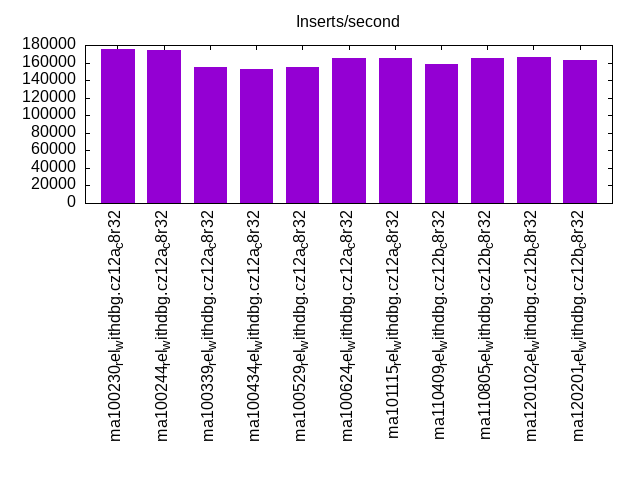
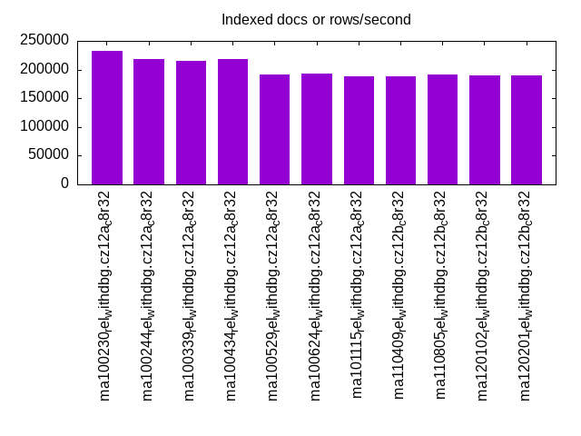
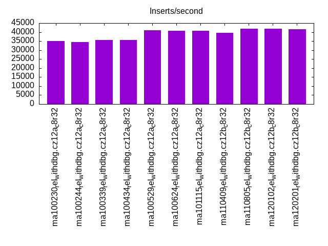
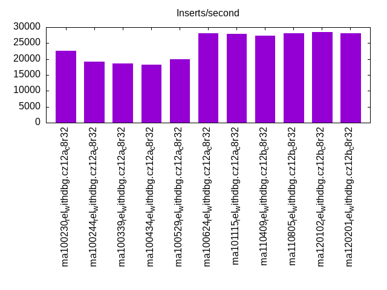
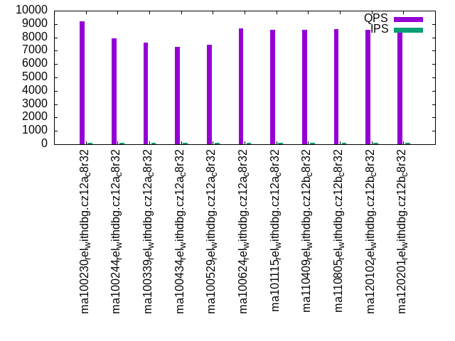
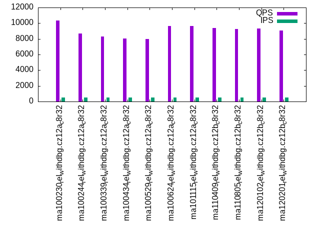
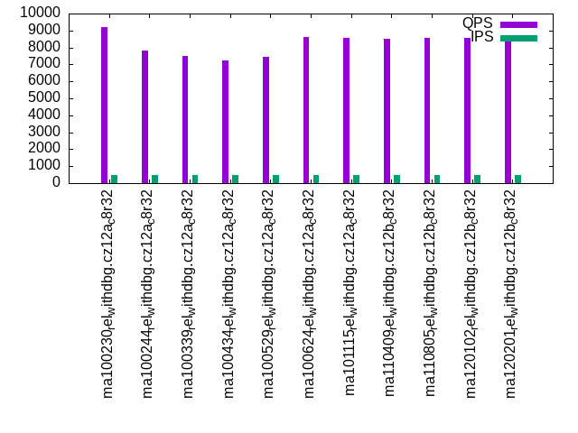
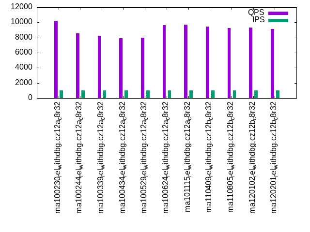
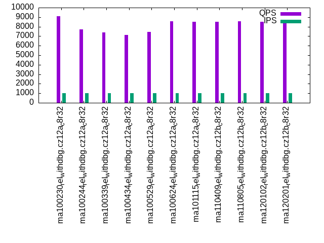

This is a report for the insert benchmark with 30M docs and 1 client(s). It is generated by scripts (bash, awk, sed) and Tufte might not be impressed. An overview of the insert benchmark is here and a short update is here. Below, by DBMS, I mean DBMS+version.config. An example is my8020.c10b40 where my means MySQL, 8020 is version 8.0.20 and c10b40 is the name for the configuration file.
The test server has 8 AMD cores, 32G RAM and an NVMe device for the database. The benchmark was run with 1 client and there were 1 or 3 connections per client (1 for queries or inserts without rate limits, 1+1 for rate limited inserts+deletes). It uses 1 table with a table per client. It loads 30M rows per table without secondary indexes, creates 3 secondary indexes per table, then inserts 40m+10m rows per table with a delete per insert to avoid growing the table. It then does 6 read+write tests for 1800s each that do queries as fast as possible with 100,100,500,500,1000,1000 inserts/s and the same for deletes/s per client concurrent with the queries. The database is cached by InnoDB. Clients and the DBMS share one server.
The tested DBMS are:
The numbers are inserts/s for l.i0, l.i1 and l.i2, indexed docs (or rows) /s for l.x and queries/s for qr100, qp100 thru qr1000, qp1000" The values are the average rate over the entire test for inserts (IPS) and queries (QPS). The range of values for IPS and QPS is split into 3 parts: bottom 25%, middle 50%, top 25%. Values in the bottom 25% have a red background, values in the top 25% have a green background and values in the middle have no color. A gray background is used for values that can be ignored because the DBMS did not sustain the target insert rate. Red backgrounds are not used when the minimum value is within 80% of the max value.
| dbms | l.i0 | l.x | l.i1 | l.i2 | qr100 | qp100 | qr500 | qp500 | qr1000 | qp1000 |
|---|---|---|---|---|---|---|---|---|---|---|
| ma100230_rel_withdbg.cz12a_c8r32 | 175438 | 232559 | 34965 | 22676 | 10387 | 9194 | 10332 | 9202 | 10206 | 9095 |
| ma100244_rel_withdbg.cz12a_c8r32 | 174419 | 218979 | 34364 | 19268 | 8843 | 7921 | 8711 | 7810 | 8568 | 7702 |
| ma100339_rel_withdbg.cz12a_c8r32 | 154639 | 215828 | 35714 | 18657 | 8366 | 7582 | 8311 | 7493 | 8206 | 7394 |
| ma100434_rel_withdbg.cz12a_c8r32 | 152284 | 218979 | 35587 | 18182 | 8069 | 7278 | 8063 | 7250 | 7936 | 7128 |
| ma100529_rel_withdbg.cz12a_c8r32 | 155440 | 191083 | 41068 | 19920 | 8058 | 7468 | 7989 | 7443 | 7983 | 7448 |
| ma100624_rel_withdbg.cz12a_c8r32 | 164835 | 192308 | 40816 | 28169 | 9760 | 8681 | 9657 | 8629 | 9666 | 8585 |
| ma101115_rel_withdbg.cz12a_c8r32 | 164835 | 187501 | 40650 | 27933 | 9710 | 8579 | 9653 | 8579 | 9709 | 8507 |
| ma110409_rel_withdbg.cz12b_c8r32 | 157895 | 188680 | 39487 | 27248 | 9480 | 8561 | 9388 | 8509 | 9440 | 8490 |
| ma110805_rel_withdbg.cz12b_c8r32 | 165746 | 191083 | 41973 | 28090 | 9271 | 8595 | 9247 | 8544 | 9252 | 8568 |
| ma120102_rel_withdbg.cz12b_c8r32 | 166667 | 189874 | 41973 | 28490 | 9422 | 8567 | 9350 | 8557 | 9350 | 8514 |
| ma120201_rel_withdbg.cz12b_c8r32 | 163043 | 189874 | 41667 | 28011 | 9120 | 8485 | 9076 | 8327 | 9096 | 8398 |
This table has relative throughput, throughput for the DBMS relative to the DBMS in the first line, using the absolute throughput from the previous table. Values less than 0.95 have a yellow background. Values greater than 1.05 have a blue background.
| dbms | l.i0 | l.x | l.i1 | l.i2 | qr100 | qp100 | qr500 | qp500 | qr1000 | qp1000 |
|---|---|---|---|---|---|---|---|---|---|---|
| ma100230_rel_withdbg.cz12a_c8r32 | 1.00 | 1.00 | 1.00 | 1.00 | 1.00 | 1.00 | 1.00 | 1.00 | 1.00 | 1.00 |
| ma100244_rel_withdbg.cz12a_c8r32 | 0.99 | 0.94 | 0.98 | 0.85 | 0.85 | 0.86 | 0.84 | 0.85 | 0.84 | 0.85 |
| ma100339_rel_withdbg.cz12a_c8r32 | 0.88 | 0.93 | 1.02 | 0.82 | 0.81 | 0.82 | 0.80 | 0.81 | 0.80 | 0.81 |
| ma100434_rel_withdbg.cz12a_c8r32 | 0.87 | 0.94 | 1.02 | 0.80 | 0.78 | 0.79 | 0.78 | 0.79 | 0.78 | 0.78 |
| ma100529_rel_withdbg.cz12a_c8r32 | 0.89 | 0.82 | 1.17 | 0.88 | 0.78 | 0.81 | 0.77 | 0.81 | 0.78 | 0.82 |
| ma100624_rel_withdbg.cz12a_c8r32 | 0.94 | 0.83 | 1.17 | 1.24 | 0.94 | 0.94 | 0.93 | 0.94 | 0.95 | 0.94 |
| ma101115_rel_withdbg.cz12a_c8r32 | 0.94 | 0.81 | 1.16 | 1.23 | 0.93 | 0.93 | 0.93 | 0.93 | 0.95 | 0.94 |
| ma110409_rel_withdbg.cz12b_c8r32 | 0.90 | 0.81 | 1.13 | 1.20 | 0.91 | 0.93 | 0.91 | 0.92 | 0.92 | 0.93 |
| ma110805_rel_withdbg.cz12b_c8r32 | 0.94 | 0.82 | 1.20 | 1.24 | 0.89 | 0.93 | 0.89 | 0.93 | 0.91 | 0.94 |
| ma120102_rel_withdbg.cz12b_c8r32 | 0.95 | 0.82 | 1.20 | 1.26 | 0.91 | 0.93 | 0.90 | 0.93 | 0.92 | 0.94 |
| ma120201_rel_withdbg.cz12b_c8r32 | 0.93 | 0.82 | 1.19 | 1.24 | 0.88 | 0.92 | 0.88 | 0.90 | 0.89 | 0.92 |
This lists the average rate of inserts/s for the tests that do inserts concurrent with queries. For such tests the query rate is listed in the table above. The read+write tests are setup so that the insert rate should match the target rate every second. Cells that are not at least 95% of the target have a red background to indicate a failure to satisfy the target.
| dbms | qr100.L1 | qp100.L2 | qr500.L3 | qp500.L4 | qr1000.L5 | qp1000.L6 |
|---|---|---|---|---|---|---|
| ma100230_rel_withdbg.cz12a_c8r32 | 100 | 100 | 500 | 500 | 1000 | 1000 |
| ma100244_rel_withdbg.cz12a_c8r32 | 100 | 100 | 500 | 500 | 1000 | 1000 |
| ma100339_rel_withdbg.cz12a_c8r32 | 100 | 100 | 500 | 500 | 1000 | 1000 |
| ma100434_rel_withdbg.cz12a_c8r32 | 100 | 100 | 500 | 500 | 1000 | 999 |
| ma100529_rel_withdbg.cz12a_c8r32 | 100 | 100 | 500 | 500 | 999 | 999 |
| ma100624_rel_withdbg.cz12a_c8r32 | 100 | 100 | 500 | 500 | 999 | 999 |
| ma101115_rel_withdbg.cz12a_c8r32 | 100 | 100 | 500 | 500 | 999 | 999 |
| ma110409_rel_withdbg.cz12b_c8r32 | 100 | 100 | 500 | 500 | 999 | 1000 |
| ma110805_rel_withdbg.cz12b_c8r32 | 100 | 100 | 500 | 500 | 999 | 1000 |
| ma120102_rel_withdbg.cz12b_c8r32 | 100 | 100 | 500 | 500 | 1000 | 999 |
| ma120201_rel_withdbg.cz12b_c8r32 | 100 | 100 | 500 | 500 | 999 | 999 |
| target | 100 | 100 | 500 | 500 | 1000 | 1000 |
l.i0: load without secondary indexes. Graphs for performance per 1-second interval are here.
Average throughput:
Insert response time histogram: each cell has the percentage of responses that take <= the time in the header and max is the max response time in seconds. For the max column values in the top 25% of the range have a red background and in the bottom 25% of the range have a green background. The red background is not used when the min value is within 80% of the max value.
| dbms | 256us | 1ms | 4ms | 16ms | 64ms | 256ms | 1s | 4s | 16s | gt | max |
|---|---|---|---|---|---|---|---|---|---|---|---|
| ma100230_rel_withdbg.cz12a_c8r32 | 99.668 | 0.139 | 0.177 | 0.012 | 0.004 | 0.122 | |||||
| ma100244_rel_withdbg.cz12a_c8r32 | 99.797 | 0.008 | 0.170 | 0.020 | 0.004 | 0.112 | |||||
| ma100339_rel_withdbg.cz12a_c8r32 | 99.778 | 0.021 | 0.166 | 0.031 | 0.004 | 0.112 | |||||
| ma100434_rel_withdbg.cz12a_c8r32 | 99.775 | 0.023 | 0.128 | 0.069 | 0.004 | 0.108 | |||||
| ma100529_rel_withdbg.cz12a_c8r32 | 99.678 | 0.028 | 0.131 | 0.159 | 0.004 | 0.112 | |||||
| ma100624_rel_withdbg.cz12a_c8r32 | 99.694 | 0.116 | 0.059 | 0.127 | 0.004 | 0.255 | |||||
| ma101115_rel_withdbg.cz12a_c8r32 | 99.714 | 0.096 | 0.051 | 0.134 | 0.004 | 0.119 | |||||
| ma110409_rel_withdbg.cz12b_c8r32 | 99.684 | 0.126 | 0.056 | 0.130 | 0.004 | 0.120 | |||||
| ma110805_rel_withdbg.cz12b_c8r32 | 99.695 | 0.116 | 0.133 | 0.052 | 0.004 | 0.121 | |||||
| ma120102_rel_withdbg.cz12b_c8r32 | 99.692 | 0.119 | 0.159 | 0.026 | 0.004 | 0.132 | |||||
| ma120201_rel_withdbg.cz12b_c8r32 | 99.694 | 0.117 | 0.121 | 0.064 | 0.004 | 0.114 |
Performance metrics for the DBMS listed above. Some are normalized by throughput, others are not. Legend for results is here.
ips qps rps rmbps wps wmbps rpq rkbpq wpi wkbpi csps cpups cspq cpupq dbgb1 dbgb2 rss maxop p50 p99 tag 175438 0 1 0.0 1134.5 61.9 0.000 0.000 0.006 0.361 21596 20.8 0.123 9 2.0 32.8 2.9 0.122 177176 157080 ma100230_rel_withdbg.cz12a_c8r32 174419 0 0 0.0 1101.1 60.8 0.000 0.000 0.006 0.357 19233 20.1 0.110 9 2.0 32.8 2.8 0.112 176481 155483 ma100244_rel_withdbg.cz12a_c8r32 154639 0 0 0.0 1074.3 59.6 0.000 0.000 0.007 0.395 51892 27.9 0.336 14 2.0 32.8 2.9 0.112 155883 136586 ma100339_rel_withdbg.cz12a_c8r32 152284 0 0 0.0 1053.2 58.4 0.000 0.000 0.007 0.393 51700 28.0 0.339 15 2.0 32.8 NA 0.108 154584 135483 ma100434_rel_withdbg.cz12a_c8r32 155440 0 0 0.0 1280.6 50.5 0.000 0.000 0.008 0.333 67581 23.8 0.435 12 2.0 32.8 2.7 0.112 156783 137486 ma100529_rel_withdbg.cz12a_c8r32 164835 0 0 0.0 374.7 35.4 0.000 0.000 0.002 0.220 20858 22.5 0.127 11 2.0 32.8 2.5 0.255 166076 145580 ma100624_rel_withdbg.cz12a_c8r32 164835 0 0 0.0 279.3 32.3 0.000 0.000 0.002 0.201 20508 20.1 0.124 10 2.0 32.8 2.5 0.119 166483 145680 ma101115_rel_withdbg.cz12a_c8r32 157895 0 0 0.0 266.4 30.8 0.000 0.000 0.002 0.200 28366 21.4 0.180 11 2.0 32.8 2.5 0.120 159877 134182 ma110409_rel_withdbg.cz12b_c8r32 165746 0 0 0.0 279.7 32.4 0.000 0.000 0.002 0.200 21125 20.2 0.127 10 2.0 32.8 2.5 0.121 167475 143481 ma110805_rel_withdbg.cz12b_c8r32 166667 0 0 0.0 281.0 32.5 0.000 0.000 0.002 0.200 21186 20.5 0.127 10 2.0 32.8 2.6 0.132 168478 145882 ma120102_rel_withdbg.cz12b_c8r32 163043 0 0 0.0 279.0 32.2 0.000 0.000 0.002 0.202 20926 20.2 0.128 10 2.0 32.8 2.5 0.114 165477 145283 ma120201_rel_withdbg.cz12b_c8r32
Average values from iostat.
r/s rkB/s rrqm/s %rrqm r_await rareq-s w/s wkB/s wrqm/s %wrqm w_await wareq-s d/s dkB/s drqm/s %drqm d_await dareq-s f/s f_await aqu-sz %util 0.236 0.945 0.000 0.000 2.384 2.667 1157.5 64581.5 25.37 2.528 0.844 58.48 0.497 36.02 0.000 0.000 0.280 26.44 5.261 1.688 0.888 7.521 ma100230_rel_withdbg.cz12a_c8r32 0.000 0.000 0.000 0.000 0.000 0.000 1122.9 63415.5 25.52 2.622 0.900 58.82 0.533 24.87 0.000 0.000 0.352 15.98 5.206 2.035 0.898 7.712 ma100244_rel_withdbg.cz12a_c8r32 0.000 0.000 0.000 0.000 0.000 0.000 1093.7 62038.9 26.49 2.730 1.265 60.14 0.697 5.015 0.000 0.000 0.294 2.382 5.048 1.994 1.055 7.256 ma100339_rel_withdbg.cz12a_c8r32 0.000 0.000 0.000 0.000 0.000 0.000 1071.1 60657.9 27.37 2.927 1.368 60.07 0.805 6.316 0.000 0.000 0.280 2.496 5.063 2.075 1.098 7.257 ma100434_rel_withdbg.cz12a_c8r32 0.005 0.022 0.000 0.000 0.000 0.108 1289.6 52355.7 45.85 3.472 0.791 38.91 0.751 3.849 0.000 0.000 0.324 1.743 11.10 1.572 1.035 9.379 ma100529_rel_withdbg.cz12a_c8r32 0.229 0.914 0.000 0.000 2.726 2.286 380.8 36896.3 19.81 7.836 4.020 114.6 0.434 6.171 0.000 0.000 0.431 5.474 6.937 1.687 0.893 6.450 ma100624_rel_withdbg.cz12a_c8r32 0.211 0.846 0.000 0.000 2.962 2.400 282.8 33671.6 19.36 8.711 4.065 116.8 0.543 5.239 0.000 0.000 0.353 3.349 6.903 1.758 0.809 6.373 ma101115_rel_withdbg.cz12a_c8r32 0.227 0.908 0.000 0.000 3.063 2.703 269.6 32044.0 20.40 9.548 4.006 116.6 0.351 5.103 0.000 0.000 0.356 4.803 6.692 1.696 0.764 6.045 ma110409_rel_withdbg.cz12b_c8r32 0.206 0.823 0.000 0.000 2.709 2.629 283.3 33722.3 21.39 9.404 4.045 116.9 0.463 88.98 0.000 0.000 0.541 66.03 6.989 1.112 0.806 5.815 ma110805_rel_withdbg.cz12b_c8r32 0.234 0.937 0.000 0.000 2.971 2.629 284.5 33846.5 22.83 10.06 3.993 116.8 0.509 4.754 0.000 0.000 0.205 3.113 7.017 0.913 0.793 5.689 ma120102_rel_withdbg.cz12b_c8r32 0.189 0.754 0.000 0.000 2.829 2.400 282.5 33576.4 21.33 9.556 3.833 116.6 0.503 5.897 0.000 0.000 0.296 3.925 6.949 1.202 0.784 5.825 ma120201_rel_withdbg.cz12b_c8r32
l.x: create secondary indexes.
Average throughput:
Performance metrics for the DBMS listed above. Some are normalized by throughput, others are not. Legend for results is here.
ips qps rps rmbps wps wmbps rpq rkbpq wpi wkbpi csps cpups cspq cpupq dbgb1 dbgb2 rss maxop p50 p99 tag 232559 0 0 0.0 2621.4 188.6 0.000 0.000 0.011 0.830 10076 12.3 0.043 4 4.6 35.4 4.6 0.001 NA NA ma100230_rel_withdbg.cz12a_c8r32 218979 0 0 0.0 2190.6 193.3 0.000 0.000 0.010 0.904 8511 12.0 0.039 4 4.6 35.4 4.6 0.001 NA NA ma100244_rel_withdbg.cz12a_c8r32 215828 0 0 0.0 2182.0 192.6 0.000 0.000 0.010 0.914 8167 12.0 0.038 4 4.6 35.4 4.6 0.001 NA NA ma100339_rel_withdbg.cz12a_c8r32 218979 0 0 0.0 2195.8 193.8 0.000 0.000 0.010 0.906 8640 12.3 0.039 4 4.5 35.3 NA 0.001 NA NA ma100434_rel_withdbg.cz12a_c8r32 191083 0 0 0.0 1212.7 149.9 0.000 0.000 0.006 0.804 638 12.2 0.003 5 4.5 35.3 4.5 0.001 NA NA ma100529_rel_withdbg.cz12a_c8r32 192308 0 0 0.0 2541.1 171.4 0.000 0.000 0.013 0.913 7503 12.6 0.039 5 4.2 35.0 4.4 0.001 NA NA ma100624_rel_withdbg.cz12a_c8r32 187501 0 0 0.0 2503.0 166.2 0.000 0.000 0.013 0.908 7580 12.5 0.040 5 4.2 35.0 4.1 0.001 NA NA ma101115_rel_withdbg.cz12a_c8r32 188680 0 0 0.0 2569.8 169.9 0.000 0.000 0.014 0.922 7692 12.5 0.041 5 4.2 35.0 4.1 0.001 NA NA ma110409_rel_withdbg.cz12b_c8r32 191083 0 0 0.0 2580.0 171.1 0.000 0.000 0.014 0.917 7766 12.6 0.041 5 4.2 35.0 4.3 0.001 NA NA ma110805_rel_withdbg.cz12b_c8r32 189874 0 0 0.0 2573.1 170.3 0.000 0.000 0.014 0.919 7665 12.5 0.040 5 4.2 35.0 4.2 0.001 NA NA ma120102_rel_withdbg.cz12b_c8r32 189874 0 0 0.0 2573.4 170.4 0.000 0.000 0.014 0.919 7850 12.7 0.041 5 4.2 35.0 4.2 0.001 NA NA ma120201_rel_withdbg.cz12b_c8r32
Average values from iostat.
r/s rkB/s rrqm/s %rrqm r_await rareq-s w/s wkB/s wrqm/s %wrqm w_await wareq-s d/s dkB/s drqm/s %drqm d_await dareq-s f/s f_await aqu-sz %util 0.242 0.968 0.000 0.000 0.050 2.000 2718.6 199638 22.99 0.912 0.080 110.5 1.009 10268.1 0.000 0.000 0.079 1002.6 5.183 1.327 0.167 7.354 ma100230_rel_withdbg.cz12a_c8r32 0.000 0.000 0.000 0.000 0.000 0.000 2264.1 204167 24.62 1.714 0.141 115.1 1.331 9472.1 0.000 0.000 0.054 604.3 5.183 1.624 0.243 7.520 ma100244_rel_withdbg.cz12a_c8r32 0.000 0.000 0.000 0.000 0.000 0.000 2255.0 203414 23.81 1.619 0.142 115.3 1.346 9478.5 0.000 0.000 0.060 606.0 4.923 1.456 0.243 7.382 ma100339_rel_withdbg.cz12a_c8r32 0.000 0.000 0.000 0.000 0.000 0.000 2269.3 204740 24.82 1.541 0.129 114.2 1.331 9487.4 0.000 0.000 0.061 625.7 5.138 1.795 0.241 7.452 ma100434_rel_withdbg.cz12a_c8r32 0.013 0.053 0.000 0.000 0.000 0.133 1244.4 157556 20.22 1.924 0.183 126.3 1.147 8209.3 0.000 0.000 0.084 531.2 8.153 1.563 0.217 5.885 ma100529_rel_withdbg.cz12a_c8r32 0.173 0.693 0.000 0.000 0.051 1.733 2417.1 177060 20.57 1.723 0.177 101.0 1.107 8235.0 0.000 0.000 0.048 559.4 8.087 1.602 0.254 7.359 ma100624_rel_withdbg.cz12a_c8r32 0.142 0.568 0.000 0.000 0.016 1.419 2446.1 172566 18.83 1.819 0.180 101.2 0.774 7969.5 0.000 0.000 0.075 777.3 7.961 1.491 0.264 6.974 ma101115_rel_withdbg.cz12a_c8r32 0.133 0.533 0.000 0.000 0.007 1.467 2513.5 176610 18.50 1.522 0.153 100.5 1.007 8209.1 0.000 0.000 0.060 593.2 7.520 1.621 0.262 6.919 ma110409_rel_withdbg.cz12b_c8r32 0.087 0.347 0.000 0.000 0.033 1.067 2523.3 177770 19.49 1.628 0.136 100.6 0.707 8210.6 0.000 0.000 0.027 848.1 8.100 0.931 0.221 6.540 ma110805_rel_withdbg.cz12b_c8r32 0.133 0.533 0.000 0.000 0.028 1.467 2516.7 177011 19.18 1.507 0.130 100.1 0.620 8209.1 0.000 0.000 0.068 991.9 7.727 1.092 0.213 6.529 ma120102_rel_withdbg.cz12b_c8r32 0.093 0.373 0.000 0.000 0.033 1.200 2516.9 177018 18.75 1.519 0.162 100.1 0.620 8209.2 0.000 0.000 0.043 1016.5 7.667 1.103 0.268 6.652 ma120201_rel_withdbg.cz12b_c8r32
l.i1: continue load after secondary indexes created with 50 inserts per transaction. Graphs for performance per 1-second interval are here.
Average throughput:
Insert response time histogram: each cell has the percentage of responses that take <= the time in the header and max is the max response time in seconds. For the max column values in the top 25% of the range have a red background and in the bottom 25% of the range have a green background. The red background is not used when the min value is within 80% of the max value.
| dbms | 256us | 1ms | 4ms | 16ms | 64ms | 256ms | 1s | 4s | 16s | gt | max |
|---|---|---|---|---|---|---|---|---|---|---|---|
| ma100230_rel_withdbg.cz12a_c8r32 | 6.436 | 91.740 | 1.793 | 0.030 | 0.055 | ||||||
| ma100244_rel_withdbg.cz12a_c8r32 | 2.228 | 96.198 | 1.536 | 0.037 | 0.064 | ||||||
| ma100339_rel_withdbg.cz12a_c8r32 | 0.245 | 98.255 | 1.465 | 0.035 | 0.061 | ||||||
| ma100434_rel_withdbg.cz12a_c8r32 | 0.169 | 98.276 | 1.520 | 0.036 | nonzero | 0.100 | |||||
| ma100529_rel_withdbg.cz12a_c8r32 | 13.994 | 84.968 | 0.966 | 0.065 | 0.001 | 0.005 | 0.348 | ||||
| ma100624_rel_withdbg.cz12a_c8r32 | 21.870 | 77.291 | 0.775 | 0.064 | nonzero | 0.192 | |||||
| ma101115_rel_withdbg.cz12a_c8r32 | 22.581 | 76.567 | 0.783 | 0.068 | 0.001 | nonzero | 0.264 | ||||
| ma110409_rel_withdbg.cz12b_c8r32 | 26.585 | 72.143 | 1.126 | 0.143 | 0.003 | 0.235 | |||||
| ma110805_rel_withdbg.cz12b_c8r32 | 45.470 | 53.267 | 1.124 | 0.137 | 0.003 | 0.232 | |||||
| ma120102_rel_withdbg.cz12b_c8r32 | 45.711 | 53.011 | 1.137 | 0.138 | 0.003 | 0.246 | |||||
| ma120201_rel_withdbg.cz12b_c8r32 | 42.203 | 56.561 | 1.109 | 0.125 | 0.002 | nonzero | 0.282 |
Delete response time histogram: each cell has the percentage of responses that take <= the time in the header and max is the max response time in seconds. For the max column values in the top 25% of the range have a red background and in the bottom 25% of the range have a green background. The red background is not used when the min value is within 80% of the max value.
| dbms | 256us | 1ms | 4ms | 16ms | 64ms | 256ms | 1s | 4s | 16s | gt | max |
|---|---|---|---|---|---|---|---|---|---|---|---|
| ma100230_rel_withdbg.cz12a_c8r32 | 68.010 | 31.024 | 0.956 | 0.010 | 0.054 | ||||||
| ma100244_rel_withdbg.cz12a_c8r32 | 58.159 | 41.134 | 0.694 | 0.013 | 0.056 | ||||||
| ma100339_rel_withdbg.cz12a_c8r32 | 79.651 | 19.737 | 0.600 | 0.012 | 0.058 | ||||||
| ma100434_rel_withdbg.cz12a_c8r32 | 79.339 | 19.976 | 0.671 | 0.013 | nonzero | 0.086 | |||||
| ma100529_rel_withdbg.cz12a_c8r32 | 97.550 | 1.781 | 0.627 | 0.035 | 0.001 | 0.005 | 0.266 | ||||
| ma100624_rel_withdbg.cz12a_c8r32 | 85.879 | 13.499 | 0.570 | 0.052 | nonzero | 0.177 | |||||
| ma101115_rel_withdbg.cz12a_c8r32 | 86.579 | 12.809 | 0.557 | 0.054 | 0.001 | nonzero | 0.264 | ||||
| ma110409_rel_withdbg.cz12b_c8r32 | 81.593 | 17.341 | 0.939 | 0.126 | 0.002 | 0.232 | |||||
| ma110805_rel_withdbg.cz12b_c8r32 | 88.766 | 10.198 | 0.915 | 0.118 | 0.003 | 0.247 | |||||
| ma120102_rel_withdbg.cz12b_c8r32 | 89.160 | 9.780 | 0.935 | 0.121 | 0.003 | 0.245 | |||||
| ma120201_rel_withdbg.cz12b_c8r32 | 87.788 | 11.189 | 0.913 | 0.108 | 0.001 | nonzero | 0.282 |
Performance metrics for the DBMS listed above. Some are normalized by throughput, others are not. Legend for results is here.
ips qps rps rmbps wps wmbps rpq rkbpq wpi wkbpi csps cpups cspq cpupq dbgb1 dbgb2 rss maxop p50 p99 tag 34965 0 0 0.0 14205.9 434.0 0.000 0.000 0.406 12.712 46715 48.9 1.336 112 6.2 37.0 7.4 0.055 35696 11099 ma100230_rel_withdbg.cz12a_c8r32 34364 0 0 0.0 11883.9 369.3 0.000 0.000 0.346 11.006 42993 49.7 1.251 116 6.2 37.0 7.3 0.064 35196 12549 ma100244_rel_withdbg.cz12a_c8r32 35714 0 0 0.0 12100.9 377.7 0.000 0.000 0.339 10.828 55356 48.2 1.550 108 6.2 37.0 7.3 0.061 36845 10799 ma100339_rel_withdbg.cz12a_c8r32 35587 0 0 0.0 12611.7 391.4 0.000 0.000 0.354 11.262 54250 47.5 1.524 107 6.2 37.0 NA 0.100 36645 11098 ma100434_rel_withdbg.cz12a_c8r32 41068 0 0 0.0 8068.0 254.6 0.000 0.000 0.196 6.349 51865 36.0 1.263 70 6.8 38.8 8.1 0.348 42646 3350 ma100529_rel_withdbg.cz12a_c8r32 40816 0 0 0.0 3695.7 137.8 0.000 0.000 0.091 3.458 36453 34.3 0.893 67 5.9 36.7 6.4 0.192 42795 15248 ma100624_rel_withdbg.cz12a_c8r32 40650 0 0 0.0 3654.6 136.6 0.000 0.000 0.090 3.440 35919 33.5 0.884 66 5.8 36.7 6.4 0.264 42545 14198 ma101115_rel_withdbg.cz12a_c8r32 39487 0 0 0.0 3608.5 133.0 0.000 0.000 0.091 3.450 32190 33.2 0.815 67 5.8 36.6 6.4 0.235 41095 15848 ma110409_rel_withdbg.cz12b_c8r32 41973 0 0 0.0 3814.3 140.7 0.000 0.000 0.091 3.433 34319 32.4 0.818 62 5.8 36.7 6.4 0.232 43295 16148 ma110805_rel_withdbg.cz12b_c8r32 41973 0 0 0.0 3779.8 140.0 0.000 0.000 0.090 3.417 34067 32.6 0.812 62 5.9 36.7 6.5 0.246 43344 15048 ma120102_rel_withdbg.cz12b_c8r32 41667 0 0 0.0 3767.9 139.2 0.000 0.000 0.090 3.422 33934 32.8 0.814 63 5.8 36.6 6.4 0.282 43145 15648 ma120201_rel_withdbg.cz12b_c8r32
Average values from iostat.
r/s rkB/s rrqm/s %rrqm r_await rareq-s w/s wkB/s wrqm/s %wrqm w_await wareq-s d/s dkB/s drqm/s %drqm d_await dareq-s f/s f_await aqu-sz %util 0.070 0.278 0.000 0.000 0.204 1.022 14257.0 445837 248.1 1.736 0.215 31.82 0.224 10.89 0.000 0.000 0.132 7.687 55.86 1.204 2.801 32.06 ma100230_rel_withdbg.cz12a_c8r32 0.018 0.073 0.000 0.000 0.329 0.346 11927.5 379363 211.5 1.765 0.257 32.27 0.192 2.445 0.000 0.000 0.170 2.182 47.70 1.561 2.979 30.44 ma100244_rel_withdbg.cz12a_c8r32 0.018 0.072 0.000 0.000 0.261 0.360 12147.0 387977 207.2 1.695 0.261 32.46 0.229 7.460 0.000 0.000 0.165 5.175 47.80 1.553 3.068 30.51 ma100339_rel_withdbg.cz12a_c8r32 0.017 0.068 0.000 0.000 0.368 0.341 12660.5 402096 215.7 1.695 0.261 32.26 0.239 1.837 0.000 0.000 0.221 1.439 49.58 1.584 3.152 31.49 ma100434_rel_withdbg.cz12a_c8r32 0.004 0.017 0.000 0.000 0.000 0.083 8105.5 261622 99.93 1.803 1.183 54.48 0.180 2.259 0.000 0.000 0.406 2.708 25.73 1.594 2.799 16.59 ma100529_rel_withdbg.cz12a_c8r32 0.068 0.271 0.000 0.000 0.227 0.800 3702.1 141232 30.76 0.733 0.900 39.33 0.230 2.933 0.000 0.000 0.176 2.409 12.01 1.590 3.149 10.05 ma100624_rel_withdbg.cz12a_c8r32 0.058 0.234 0.000 0.000 0.167 0.697 3659.0 139929 22.87 0.548 0.927 39.24 0.330 9.079 0.000 0.000 0.350 5.668 11.96 1.613 3.220 10.08 ma101115_rel_withdbg.cz12a_c8r32 0.054 0.215 0.000 0.000 0.167 0.657 3612.8 136333 46.66 1.229 0.764 38.41 0.275 3.140 0.000 0.000 0.261 2.345 47.05 1.129 2.744 14.04 ma110409_rel_withdbg.cz12b_c8r32 0.033 0.131 0.000 0.000 0.130 0.571 3819.8 144217 50.27 1.238 0.765 38.44 0.283 35.88 0.000 0.000 0.201 22.10 49.78 1.118 2.894 14.85 ma110805_rel_withdbg.cz12b_c8r32 0.058 0.233 0.000 0.000 0.236 0.741 3785.2 143546 55.95 1.360 0.751 38.61 0.288 2.472 0.000 0.000 0.187 1.953 49.38 1.145 2.822 14.89 ma120102_rel_withdbg.cz12b_c8r32 0.048 0.193 0.000 0.000 0.170 0.670 3773.3 142739 47.83 1.189 0.742 38.55 0.365 2.882 0.000 0.000 0.291 2.170 49.05 1.072 2.790 14.21 ma120201_rel_withdbg.cz12b_c8r32
l.i2: continue load after secondary indexes created with 5 inserts per transaction. Graphs for performance per 1-second interval are here.
Average throughput:
Insert response time histogram: each cell has the percentage of responses that take <= the time in the header and max is the max response time in seconds. For the max column values in the top 25% of the range have a red background and in the bottom 25% of the range have a green background. The red background is not used when the min value is within 80% of the max value.
| dbms | 256us | 1ms | 4ms | 16ms | 64ms | 256ms | 1s | 4s | 16s | gt | max |
|---|---|---|---|---|---|---|---|---|---|---|---|
| ma100230_rel_withdbg.cz12a_c8r32 | 93.688 | 5.862 | 0.367 | 0.081 | 0.001 | 0.051 | |||||
| ma100244_rel_withdbg.cz12a_c8r32 | 81.927 | 17.520 | 0.435 | 0.116 | 0.001 | 0.064 | |||||
| ma100339_rel_withdbg.cz12a_c8r32 | 78.480 | 20.961 | 0.431 | 0.127 | 0.001 | nonzero | 0.065 | ||||
| ma100434_rel_withdbg.cz12a_c8r32 | 74.498 | 24.934 | 0.431 | 0.135 | 0.002 | nonzero | 0.066 | ||||
| ma100529_rel_withdbg.cz12a_c8r32 | 84.573 | 15.145 | 0.232 | 0.050 | 0.001 | nonzero | 0.064 | ||||
| ma100624_rel_withdbg.cz12a_c8r32 | 98.467 | 1.469 | 0.043 | 0.020 | 0.001 | 0.045 | |||||
| ma101115_rel_withdbg.cz12a_c8r32 | 98.455 | 1.472 | 0.054 | 0.018 | 0.001 | 0.049 | |||||
| ma110409_rel_withdbg.cz12b_c8r32 | 98.543 | 1.360 | 0.045 | 0.050 | 0.002 | 0.047 | |||||
| ma110805_rel_withdbg.cz12b_c8r32 | 98.795 | 1.114 | 0.043 | 0.046 | 0.002 | 0.056 | |||||
| ma120102_rel_withdbg.cz12b_c8r32 | 98.908 | 0.995 | 0.048 | 0.048 | 0.001 | 0.041 | |||||
| ma120201_rel_withdbg.cz12b_c8r32 | 98.777 | 1.130 | 0.041 | 0.051 | 0.001 | 0.047 |
Delete response time histogram: each cell has the percentage of responses that take <= the time in the header and max is the max response time in seconds. For the max column values in the top 25% of the range have a red background and in the bottom 25% of the range have a green background. The red background is not used when the min value is within 80% of the max value.
| dbms | 256us | 1ms | 4ms | 16ms | 64ms | 256ms | 1s | 4s | 16s | gt | max |
|---|---|---|---|---|---|---|---|---|---|---|---|
| ma100230_rel_withdbg.cz12a_c8r32 | 96.478 | 3.125 | 0.329 | 0.067 | 0.001 | 0.051 | |||||
| ma100244_rel_withdbg.cz12a_c8r32 | 91.618 | 7.873 | 0.410 | 0.098 | 0.001 | 0.064 | |||||
| ma100339_rel_withdbg.cz12a_c8r32 | 91.074 | 8.413 | 0.403 | 0.109 | 0.001 | nonzero | 0.065 | ||||
| ma100434_rel_withdbg.cz12a_c8r32 | 89.880 | 9.587 | 0.411 | 0.121 | 0.001 | nonzero | 0.066 | ||||
| ma100529_rel_withdbg.cz12a_c8r32 | 95.365 | 4.401 | 0.196 | 0.037 | 0.001 | nonzero | 0.064 | ||||
| ma100624_rel_withdbg.cz12a_c8r32 | 99.632 | 0.311 | 0.038 | 0.018 | 0.001 | 0.045 | |||||
| ma101115_rel_withdbg.cz12a_c8r32 | 99.635 | 0.302 | 0.047 | 0.016 | 0.001 | 0.049 | |||||
| ma110409_rel_withdbg.cz12b_c8r32 | 99.306 | 0.609 | 0.039 | 0.045 | 0.002 | 0.047 | |||||
| ma110805_rel_withdbg.cz12b_c8r32 | 99.452 | 0.468 | 0.037 | 0.042 | 0.001 | 0.056 | |||||
| ma120102_rel_withdbg.cz12b_c8r32 | 99.506 | 0.410 | 0.042 | 0.041 | 0.001 | 0.041 | |||||
| ma120201_rel_withdbg.cz12b_c8r32 | 99.428 | 0.492 | 0.035 | 0.043 | 0.001 | 0.047 |
Performance metrics for the DBMS listed above. Some are normalized by throughput, others are not. Legend for results is here.
ips qps rps rmbps wps wmbps rpq rkbpq wpi wkbpi csps cpups cspq cpupq dbgb1 dbgb2 rss maxop p50 p99 tag 22676 0 0 0.0 18004.6 521.3 0.000 0.000 0.794 23.539 220699 51.7 9.733 182 6.2 37.0 7.4 0.051 22704 20578 ma100230_rel_withdbg.cz12a_c8r32 19268 0 0 0.0 17653.1 508.0 0.000 0.000 0.916 26.998 200737 51.6 10.418 214 6.2 37.0 7.4 0.064 19258 17453 ma100244_rel_withdbg.cz12a_c8r32 18657 0 0 0.0 18183.8 522.8 0.000 0.000 0.975 28.693 235398 51.9 12.617 223 6.2 37.0 7.4 0.065 18673 16793 ma100339_rel_withdbg.cz12a_c8r32 18182 0 0 0.0 18162.2 521.0 0.000 0.000 0.999 29.341 230667 51.4 12.687 226 6.2 37.0 NA 0.066 18228 16248 ma100434_rel_withdbg.cz12a_c8r32 19920 0 0 0.0 10973.6 317.2 0.000 0.000 0.551 16.306 305206 48.5 15.321 195 6.8 38.8 8.1 0.064 19983 18653 ma100529_rel_withdbg.cz12a_c8r32 28169 0 0 0.0 2022.0 77.5 0.000 0.000 0.072 2.818 133570 35.3 4.742 100 5.9 36.7 6.4 0.045 28381 26312 ma100624_rel_withdbg.cz12a_c8r32 27933 0 0 0.0 2032.0 77.6 0.000 0.000 0.073 2.846 133623 34.5 4.784 99 5.8 36.7 6.4 0.049 28242 25887 ma101115_rel_withdbg.cz12a_c8r32 27248 0 0 0.0 2018.1 76.4 0.000 0.000 0.074 2.870 126585 34.8 4.646 102 5.8 36.6 6.4 0.047 27932 23557 ma110409_rel_withdbg.cz12b_c8r32 28090 0 0 0.0 2101.2 79.1 0.000 0.000 0.075 2.883 130395 34.5 4.642 98 5.8 36.7 6.5 0.056 28737 24882 ma110805_rel_withdbg.cz12b_c8r32 28490 0 0 0.0 2086.8 79.2 0.000 0.000 0.073 2.848 131856 34.6 4.628 97 5.9 36.7 6.5 0.041 29072 25482 ma120102_rel_withdbg.cz12b_c8r32 28011 0 0 0.0 2101.1 79.0 0.000 0.000 0.075 2.889 129679 34.5 4.630 99 5.8 36.6 6.4 0.047 28602 24282 ma120201_rel_withdbg.cz12b_c8r32
Average values from iostat.
r/s rkB/s rrqm/s %rrqm r_await rareq-s w/s wkB/s wrqm/s %wrqm w_await wareq-s d/s dkB/s drqm/s %drqm d_await dareq-s f/s f_await aqu-sz %util 0.055 0.221 0.000 0.000 0.069 0.690 18045.2 534965 170.1 0.930 0.099 29.65 0.292 5.030 0.000 0.000 0.113 3.496 59.20 1.123 1.845 35.33 ma100230_rel_withdbg.cz12a_c8r32 0.014 0.055 0.000 0.000 0.049 0.275 17693.5 521372 179.2 1.003 0.111 29.47 0.220 2.102 0.000 0.000 0.177 1.977 58.15 1.509 2.040 37.90 ma100244_rel_withdbg.cz12a_c8r32 0.011 0.045 0.000 0.000 0.113 0.226 18218.7 536344 187.3 1.029 0.122 29.45 0.272 2.264 0.000 0.000 0.153 1.505 58.26 1.500 2.290 37.70 ma100339_rel_withdbg.cz12a_c8r32 0.011 0.044 0.000 0.000 0.028 0.220 18202.3 534644 195.0 1.062 0.122 29.38 0.281 3.229 0.000 0.000 0.145 1.748 58.68 1.508 2.305 37.86 ma100434_rel_withdbg.cz12a_c8r32 0.002 0.008 0.000 0.000 0.000 0.040 10977.1 325009 2.392 0.021 0.179 29.60 0.143 5.479 0.000 0.000 0.292 7.200 23.89 1.585 2.001 15.86 ma100529_rel_withdbg.cz12a_c8r32 0.046 0.183 0.000 0.000 0.219 0.400 2047.7 80146.6 6.446 0.313 1.037 39.80 0.234 4.229 0.000 0.000 0.096 2.759 6.457 1.647 1.989 5.342 ma100624_rel_withdbg.cz12a_c8r32 0.020 0.080 0.000 0.000 0.150 0.286 2058.0 80275.2 2.117 0.111 1.027 39.56 0.289 8.091 0.000 0.000 0.161 5.304 6.474 1.626 1.982 5.241 ma101115_rel_withdbg.cz12a_c8r32 0.053 0.211 0.000 0.000 0.097 0.667 2037.4 78780.2 6.800 0.340 0.936 39.35 0.322 4.044 0.000 0.000 0.150 2.350 28.50 1.157 1.783 6.873 ma110409_rel_withdbg.cz12b_c8r32 0.037 0.149 0.000 0.000 0.207 0.514 2128.4 81802.5 7.046 0.327 0.824 38.96 0.214 5.520 0.000 0.000 0.081 3.999 29.38 1.132 1.729 7.173 ma110805_rel_withdbg.cz12b_c8r32 0.043 0.174 0.000 0.000 0.222 0.638 2114.1 81949.6 7.220 0.349 0.848 39.47 0.200 3.383 0.000 0.000 0.074 2.540 28.72 1.000 1.751 6.624 ma120102_rel_withdbg.cz12b_c8r32 0.051 0.206 0.000 0.000 0.086 0.686 2111.8 81288.1 7.068 0.326 0.850 38.92 0.291 4.537 0.000 0.000 0.087 2.210 28.94 1.139 1.751 7.207 ma120201_rel_withdbg.cz12b_c8r32
qr100.L1: range queries with 100 insert/s per client. Graphs for performance per 1-second interval are here.
Average throughput:
Query response time histogram: each cell has the percentage of responses that take <= the time in the header and max is the max response time in seconds. For max values in the top 25% of the range have a red background and in the bottom 25% of the range have a green background. The red background is not used when the min value is within 80% of the max value.
| dbms | 256us | 1ms | 4ms | 16ms | 64ms | 256ms | 1s | 4s | 16s | gt | max |
|---|---|---|---|---|---|---|---|---|---|---|---|
| ma100230_rel_withdbg.cz12a_c8r32 | 99.993 | 0.007 | nonzero | nonzero | nonzero | 0.033 | |||||
| ma100244_rel_withdbg.cz12a_c8r32 | 99.995 | 0.005 | nonzero | nonzero | 0.014 | ||||||
| ma100339_rel_withdbg.cz12a_c8r32 | 99.990 | 0.009 | nonzero | nonzero | 0.015 | ||||||
| ma100434_rel_withdbg.cz12a_c8r32 | 99.948 | 0.051 | nonzero | nonzero | 0.015 | ||||||
| ma100529_rel_withdbg.cz12a_c8r32 | 99.971 | 0.029 | nonzero | 0.001 | |||||||
| ma100624_rel_withdbg.cz12a_c8r32 | 99.998 | 0.002 | 0.001 | ||||||||
| ma101115_rel_withdbg.cz12a_c8r32 | 99.999 | 0.001 | 0.001 | ||||||||
| ma110409_rel_withdbg.cz12b_c8r32 | 99.998 | 0.002 | 0.001 | ||||||||
| ma110805_rel_withdbg.cz12b_c8r32 | 99.998 | 0.002 | nonzero | nonzero | 0.008 | ||||||
| ma120102_rel_withdbg.cz12b_c8r32 | 99.998 | 0.002 | nonzero | 0.001 | |||||||
| ma120201_rel_withdbg.cz12b_c8r32 | 99.998 | 0.002 | nonzero | 0.001 |
Insert response time histogram: each cell has the percentage of responses that take <= the time in the header and max is the max response time in seconds. For max values in the top 25% of the range have a red background and in the bottom 25% of the range have a green background. The red background is not used when the min value is within 80% of the max value.
| dbms | 256us | 1ms | 4ms | 16ms | 64ms | 256ms | 1s | 4s | 16s | gt | max |
|---|---|---|---|---|---|---|---|---|---|---|---|
| ma100230_rel_withdbg.cz12a_c8r32 | 0.167 | 97.833 | 1.389 | 0.611 | 0.043 | ||||||
| ma100244_rel_withdbg.cz12a_c8r32 | 99.167 | 0.583 | 0.250 | 0.048 | |||||||
| ma100339_rel_withdbg.cz12a_c8r32 | 98.944 | 0.722 | 0.333 | 0.040 | |||||||
| ma100434_rel_withdbg.cz12a_c8r32 | 99.194 | 0.528 | 0.278 | 0.040 | |||||||
| ma100529_rel_withdbg.cz12a_c8r32 | 0.028 | 91.278 | 8.694 | 0.011 | |||||||
| ma100624_rel_withdbg.cz12a_c8r32 | 27.083 | 64.111 | 8.778 | 0.028 | 0.020 | ||||||
| ma101115_rel_withdbg.cz12a_c8r32 | 21.167 | 69.917 | 8.889 | 0.028 | 0.026 | ||||||
| ma110409_rel_withdbg.cz12b_c8r32 | 23.583 | 67.667 | 8.750 | 0.011 | |||||||
| ma110805_rel_withdbg.cz12b_c8r32 | 38.611 | 52.500 | 8.861 | 0.028 | 0.037 | ||||||
| ma120102_rel_withdbg.cz12b_c8r32 | 38.083 | 53.056 | 8.833 | 0.028 | 0.023 | ||||||
| ma120201_rel_withdbg.cz12b_c8r32 | 35.806 | 55.417 | 8.778 | 0.011 |
Delete response time histogram: each cell has the percentage of responses that take <= the time in the header and max is the max response time in seconds. For max values in the top 25% of the range have a red background and in the bottom 25% of the range have a green background. The red background is not used when the min value is within 80% of the max value.
| dbms | 256us | 1ms | 4ms | 16ms | 64ms | 256ms | 1s | 4s | 16s | gt | max |
|---|---|---|---|---|---|---|---|---|---|---|---|
| ma100230_rel_withdbg.cz12a_c8r32 | 16.361 | 81.778 | 1.389 | 0.472 | 0.043 | ||||||
| ma100244_rel_withdbg.cz12a_c8r32 | 37.056 | 62.250 | 0.611 | 0.083 | 0.023 | ||||||
| ma100339_rel_withdbg.cz12a_c8r32 | 56.778 | 42.556 | 0.500 | 0.167 | 0.036 | ||||||
| ma100434_rel_withdbg.cz12a_c8r32 | 31.917 | 67.444 | 0.583 | 0.056 | 0.028 | ||||||
| ma100529_rel_withdbg.cz12a_c8r32 | 48.000 | 43.333 | 8.667 | 0.011 | |||||||
| ma100624_rel_withdbg.cz12a_c8r32 | 45.972 | 45.417 | 8.611 | 0.015 | |||||||
| ma101115_rel_withdbg.cz12a_c8r32 | 48.778 | 42.500 | 8.694 | 0.028 | 0.021 | ||||||
| ma110409_rel_withdbg.cz12b_c8r32 | 45.667 | 45.806 | 8.528 | 0.011 | |||||||
| ma110805_rel_withdbg.cz12b_c8r32 | 45.111 | 46.028 | 8.861 | 0.013 | |||||||
| ma120102_rel_withdbg.cz12b_c8r32 | 49.250 | 41.972 | 8.778 | 0.010 | |||||||
| ma120201_rel_withdbg.cz12b_c8r32 | 48.639 | 42.861 | 8.500 | 0.010 |
Performance metrics for the DBMS listed above. Some are normalized by throughput, others are not. Legend for results is here.
ips qps rps rmbps wps wmbps rpq rkbpq wpi wkbpi csps cpups cspq cpupq dbgb1 dbgb2 rss maxop p50 p99 tag 100 10387 0 0.0 851.0 23.5 0.000 0.000 8.510 241.149 60871 12.4 5.860 96 6.2 37.0 7.4 0.033 10383 10254 ma100230_rel_withdbg.cz12a_c8r32 100 8843 0 0.0 850.9 23.6 0.000 0.000 8.518 241.417 35539 13.1 4.019 119 6.2 37.0 7.4 0.014 8847 8767 ma100244_rel_withdbg.cz12a_c8r32 100 8366 0 0.0 857.1 23.7 0.000 0.000 8.571 242.946 33753 12.5 4.035 120 6.2 37.0 7.4 0.015 8367 8303 ma100339_rel_withdbg.cz12a_c8r32 100 8069 0 0.0 852.1 23.6 0.000 0.000 8.529 241.793 32568 12.4 4.036 123 6.2 37.0 NA 0.015 8078 7965 ma100434_rel_withdbg.cz12a_c8r32 100 8058 0 0.0 2.8 0.1 0.000 0.000 0.028 1.207 32075 12.6 3.980 125 6.8 38.8 8.1 0.001 8063 7967 ma100529_rel_withdbg.cz12a_c8r32 100 9760 0 0.0 9.0 0.3 0.000 0.000 0.090 2.968 55939 13.2 5.731 108 5.9 36.7 6.4 0.001 9759 9631 ma100624_rel_withdbg.cz12a_c8r32 100 9710 0 0.0 9.0 0.3 0.000 0.000 0.090 2.966 55651 13.1 5.732 108 5.8 36.7 6.4 0.001 9695 9583 ma101115_rel_withdbg.cz12a_c8r32 100 9480 0 0.0 9.2 0.3 0.000 0.000 0.092 2.987 54372 12.4 5.735 105 5.8 36.6 6.4 0.001 9487 9391 ma110409_rel_withdbg.cz12b_c8r32 100 9271 0 0.0 9.2 0.3 0.000 0.000 0.092 2.977 53139 12.4 5.732 107 5.8 36.7 6.4 0.008 9279 9151 ma110805_rel_withdbg.cz12b_c8r32 100 9422 0 0.0 9.1 0.3 0.000 0.000 0.091 2.983 54006 12.4 5.732 105 5.9 36.7 6.4 0.001 9423 9327 ma120102_rel_withdbg.cz12b_c8r32 100 9120 0 0.0 9.2 0.3 0.000 0.000 0.092 2.980 52281 12.4 5.732 109 5.8 36.6 6.4 0.001 9119 9039 ma120201_rel_withdbg.cz12b_c8r32
Average values from iostat.
r/s rkB/s rrqm/s %rrqm r_await rareq-s w/s wkB/s wrqm/s %wrqm w_await wareq-s d/s dkB/s drqm/s %drqm d_await dareq-s f/s f_await aqu-sz %util 0.000 0.000 0.000 0.000 0.000 0.000 851.2 24119.7 5.378 0.626 0.110 28.34 0.000 0.000 0.000 0.000 0.000 0.000 1.456 1.469 0.095 3.310 ma100230_rel_withdbg.cz12a_c8r32 0.000 0.000 0.000 0.000 0.000 0.000 851.1 24123.4 5.343 0.622 0.052 28.34 0.000 0.000 0.000 0.000 0.000 0.000 1.372 1.946 0.047 2.596 ma100244_rel_withdbg.cz12a_c8r32 0.000 0.000 0.000 0.000 0.000 0.000 857.3 24300.3 5.383 0.622 0.053 28.35 0.000 0.000 0.000 0.000 0.000 0.000 1.374 1.957 0.048 2.587 ma100339_rel_withdbg.cz12a_c8r32 0.000 0.000 0.000 0.000 0.000 0.000 852.3 24160.7 5.428 0.632 0.054 28.35 0.000 0.000 0.000 0.000 0.000 0.000 1.354 1.847 0.049 2.553 ma100434_rel_withdbg.cz12a_c8r32 0.000 0.000 0.000 0.000 0.000 0.000 2.828 120.7 0.970 25.36 5.885 42.69 0.000 0.000 0.000 0.000 0.000 0.000 1.189 2.142 0.020 1.441 ma100529_rel_withdbg.cz12a_c8r32 0.000 0.000 0.000 0.000 0.000 0.000 9.032 297.4 0.975 25.28 6.126 43.48 0.001 0.002 0.000 0.000 0.003 0.011 1.194 2.809 0.021 1.439 ma100624_rel_withdbg.cz12a_c8r32 0.000 0.000 0.000 0.000 0.000 0.000 9.052 297.2 0.945 25.17 6.151 43.44 0.001 0.002 0.000 0.000 0.003 0.011 1.194 2.733 0.021 1.436 ma101115_rel_withdbg.cz12a_c8r32 0.000 0.000 0.000 0.000 0.000 0.000 9.193 299.0 0.866 22.69 5.765 43.53 0.001 0.002 0.000 0.000 0.000 0.011 1.333 1.957 0.020 1.347 ma110409_rel_withdbg.cz12b_c8r32 0.000 0.000 0.000 0.000 0.000 0.000 9.198 298.3 0.896 23.62 5.877 43.68 0.001 0.002 0.000 0.000 0.003 0.011 1.334 2.095 0.020 1.374 ma110805_rel_withdbg.cz12b_c8r32 0.000 0.000 0.000 0.000 0.000 0.000 9.153 298.9 0.889 23.66 5.785 44.19 0.001 0.002 0.000 0.000 0.003 0.011 1.334 2.004 0.019 1.355 ma120102_rel_withdbg.cz12b_c8r32 0.000 0.000 0.000 0.000 0.000 0.000 9.178 298.6 0.874 23.03 5.742 43.80 0.001 0.002 0.000 0.000 0.000 0.011 1.333 1.895 0.019 1.341 ma120201_rel_withdbg.cz12b_c8r32
qp100.L2: point queries with 100 insert/s per client. Graphs for performance per 1-second interval are here.
Average throughput:
Query response time histogram: each cell has the percentage of responses that take <= the time in the header and max is the max response time in seconds. For max values in the top 25% of the range have a red background and in the bottom 25% of the range have a green background. The red background is not used when the min value is within 80% of the max value.
| dbms | 256us | 1ms | 4ms | 16ms | 64ms | 256ms | 1s | 4s | 16s | gt | max |
|---|---|---|---|---|---|---|---|---|---|---|---|
| ma100230_rel_withdbg.cz12a_c8r32 | 99.984 | 0.016 | nonzero | nonzero | 0.010 | ||||||
| ma100244_rel_withdbg.cz12a_c8r32 | 99.977 | 0.023 | nonzero | nonzero | 0.013 | ||||||
| ma100339_rel_withdbg.cz12a_c8r32 | 99.977 | 0.023 | nonzero | nonzero | nonzero | 0.016 | |||||
| ma100434_rel_withdbg.cz12a_c8r32 | 99.907 | 0.093 | nonzero | nonzero | 0.015 | ||||||
| ma100529_rel_withdbg.cz12a_c8r32 | 99.958 | 0.042 | nonzero | nonzero | 0.004 | ||||||
| ma100624_rel_withdbg.cz12a_c8r32 | 99.997 | 0.003 | nonzero | 0.002 | |||||||
| ma101115_rel_withdbg.cz12a_c8r32 | 99.997 | 0.003 | nonzero | 0.001 | |||||||
| ma110409_rel_withdbg.cz12b_c8r32 | 99.997 | 0.003 | nonzero | 0.001 | |||||||
| ma110805_rel_withdbg.cz12b_c8r32 | 99.997 | 0.003 | nonzero | 0.001 | |||||||
| ma120102_rel_withdbg.cz12b_c8r32 | 99.997 | 0.003 | nonzero | 0.001 | |||||||
| ma120201_rel_withdbg.cz12b_c8r32 | 99.997 | 0.003 | 0.001 |
Insert response time histogram: each cell has the percentage of responses that take <= the time in the header and max is the max response time in seconds. For max values in the top 25% of the range have a red background and in the bottom 25% of the range have a green background. The red background is not used when the min value is within 80% of the max value.
| dbms | 256us | 1ms | 4ms | 16ms | 64ms | 256ms | 1s | 4s | 16s | gt | max |
|---|---|---|---|---|---|---|---|---|---|---|---|
| ma100230_rel_withdbg.cz12a_c8r32 | 0.028 | 97.944 | 1.389 | 0.639 | 0.037 | ||||||
| ma100244_rel_withdbg.cz12a_c8r32 | 99.278 | 0.500 | 0.222 | 0.034 | |||||||
| ma100339_rel_withdbg.cz12a_c8r32 | 99.139 | 0.722 | 0.139 | 0.030 | |||||||
| ma100434_rel_withdbg.cz12a_c8r32 | 99.111 | 0.694 | 0.194 | 0.034 | |||||||
| ma100529_rel_withdbg.cz12a_c8r32 | 91.333 | 8.667 | 0.011 | ||||||||
| ma100624_rel_withdbg.cz12a_c8r32 | 2.750 | 88.389 | 8.861 | 0.011 | |||||||
| ma101115_rel_withdbg.cz12a_c8r32 | 2.528 | 88.667 | 8.806 | 0.011 | |||||||
| ma110409_rel_withdbg.cz12b_c8r32 | 1.417 | 89.694 | 8.889 | 0.011 | |||||||
| ma110805_rel_withdbg.cz12b_c8r32 | 22.028 | 69.167 | 8.806 | 0.011 | |||||||
| ma120102_rel_withdbg.cz12b_c8r32 | 17.139 | 74.111 | 8.750 | 0.011 | |||||||
| ma120201_rel_withdbg.cz12b_c8r32 | 20.528 | 70.500 | 8.972 | 0.012 |
Delete response time histogram: each cell has the percentage of responses that take <= the time in the header and max is the max response time in seconds. For max values in the top 25% of the range have a red background and in the bottom 25% of the range have a green background. The red background is not used when the min value is within 80% of the max value.
| dbms | 256us | 1ms | 4ms | 16ms | 64ms | 256ms | 1s | 4s | 16s | gt | max |
|---|---|---|---|---|---|---|---|---|---|---|---|
| ma100230_rel_withdbg.cz12a_c8r32 | 1.639 | 96.667 | 1.333 | 0.361 | 0.035 | ||||||
| ma100244_rel_withdbg.cz12a_c8r32 | 0.056 | 99.472 | 0.472 | 0.016 | |||||||
| ma100339_rel_withdbg.cz12a_c8r32 | 1.889 | 97.250 | 0.694 | 0.167 | 0.031 | ||||||
| ma100434_rel_withdbg.cz12a_c8r32 | 0.361 | 99.028 | 0.472 | 0.139 | 0.031 | ||||||
| ma100529_rel_withdbg.cz12a_c8r32 | 1.083 | 90.250 | 8.667 | 0.011 | |||||||
| ma100624_rel_withdbg.cz12a_c8r32 | 41.778 | 49.444 | 8.778 | 0.011 | |||||||
| ma101115_rel_withdbg.cz12a_c8r32 | 43.778 | 47.472 | 8.750 | 0.011 | |||||||
| ma110409_rel_withdbg.cz12b_c8r32 | 39.778 | 51.389 | 8.833 | 0.011 | |||||||
| ma110805_rel_withdbg.cz12b_c8r32 | 43.028 | 48.278 | 8.694 | 0.011 | |||||||
| ma120102_rel_withdbg.cz12b_c8r32 | 44.389 | 46.944 | 8.667 | 0.010 | |||||||
| ma120201_rel_withdbg.cz12b_c8r32 | 44.139 | 46.917 | 8.944 | 0.011 |
Performance metrics for the DBMS listed above. Some are normalized by throughput, others are not. Legend for results is here.
ips qps rps rmbps wps wmbps rpq rkbpq wpi wkbpi csps cpups cspq cpupq dbgb1 dbgb2 rss maxop p50 p99 tag 100 9194 0 0.0 850.0 23.5 0.000 0.000 8.500 240.881 54548 12.7 5.933 111 6.2 37.0 7.4 0.010 9199 9119 ma100230_rel_withdbg.cz12a_c8r32 100 7921 0 0.0 847.6 23.5 0.000 0.000 8.485 240.497 32296 12.5 4.077 126 6.2 37.0 7.4 0.013 7919 7855 ma100244_rel_withdbg.cz12a_c8r32 100 7582 0 0.0 849.0 23.5 0.000 0.000 8.490 240.619 31031 13.0 4.093 137 6.2 37.0 7.4 0.016 7583 7519 ma100339_rel_withdbg.cz12a_c8r32 100 7278 0 0.0 847.4 23.5 0.000 0.000 8.483 240.440 29800 13.0 4.094 143 6.2 37.0 NA 0.015 7279 7199 ma100434_rel_withdbg.cz12a_c8r32 100 7468 0 0.0 2.8 0.1 0.000 0.000 0.028 1.187 30114 13.1 4.032 140 6.8 38.8 8.0 0.004 7471 7391 ma100529_rel_withdbg.cz12a_c8r32 100 8681 0 0.0 21.5 0.6 0.000 0.000 0.215 6.491 50351 12.8 5.800 118 5.9 36.7 6.4 0.002 8687 8591 ma100624_rel_withdbg.cz12a_c8r32 100 8579 0 0.0 21.5 0.6 0.000 0.000 0.216 6.481 49758 12.4 5.800 116 5.8 36.7 6.4 0.001 8591 8479 ma101115_rel_withdbg.cz12a_c8r32 100 8561 0 0.0 20.7 0.6 0.000 0.000 0.207 6.182 49621 12.4 5.796 116 5.8 36.6 6.4 0.001 8559 8463 ma110409_rel_withdbg.cz12b_c8r32 100 8595 0 0.0 21.8 0.6 0.000 0.000 0.218 6.485 49814 12.4 5.796 115 5.8 36.7 6.4 0.001 8607 8511 ma110805_rel_withdbg.cz12b_c8r32 100 8567 0 0.0 21.7 0.6 0.000 0.000 0.218 6.475 49680 12.4 5.799 116 5.9 36.7 6.4 0.001 8575 8463 ma120102_rel_withdbg.cz12b_c8r32 100 8485 0 0.0 21.8 0.6 0.000 0.000 0.218 6.499 49210 12.4 5.800 117 5.8 36.6 6.4 0.001 8495 8415 ma120201_rel_withdbg.cz12b_c8r32
Average values from iostat.
r/s rkB/s rrqm/s %rrqm r_await rareq-s w/s wkB/s wrqm/s %wrqm w_await wareq-s d/s dkB/s drqm/s %drqm d_await dareq-s f/s f_await aqu-sz %util 0.000 0.000 0.000 0.000 0.000 0.000 850.4 24100.4 5.335 0.623 0.125 28.34 0.005 0.020 0.000 0.000 0.011 0.100 1.441 1.541 0.108 3.498 ma100230_rel_withdbg.cz12a_c8r32 0.000 0.000 0.000 0.000 0.000 0.000 848.0 24035.4 5.348 0.627 0.055 28.35 0.004 0.071 0.000 0.000 0.017 0.357 1.356 1.988 0.049 2.517 ma100244_rel_withdbg.cz12a_c8r32 0.000 0.000 0.000 0.000 0.000 0.000 848.7 24054.9 5.326 0.622 0.053 28.34 0.000 0.000 0.000 0.000 0.000 0.000 1.373 1.934 0.047 2.522 ma100339_rel_withdbg.cz12a_c8r32 0.000 0.000 0.000 0.000 0.000 0.000 847.6 24026.2 5.458 0.640 0.056 28.35 0.006 0.045 0.000 0.000 0.022 0.223 1.358 1.913 0.049 2.531 ma100434_rel_withdbg.cz12a_c8r32 0.000 0.000 0.000 0.000 0.000 0.000 2.832 118.7 0.970 25.21 5.920 41.91 0.006 1.050 0.000 0.000 0.025 5.248 1.189 2.199 0.020 1.437 ma100529_rel_withdbg.cz12a_c8r32 0.000 0.000 0.000 0.000 0.000 0.000 15.28 473.2 1.030 25.92 6.135 43.48 0.005 0.020 0.000 0.000 0.019 0.100 1.194 2.820 0.022 1.444 ma100624_rel_withdbg.cz12a_c8r32 0.000 0.000 0.000 0.000 0.000 0.000 21.60 649.0 0.875 23.43 6.069 43.07 0.004 0.548 0.000 0.000 0.019 2.741 1.196 2.664 0.022 1.439 ma101115_rel_withdbg.cz12a_c8r32 0.000 0.000 0.000 0.000 0.000 0.000 15.44 473.3 0.946 24.16 5.796 43.70 0.000 0.000 0.000 0.000 0.000 0.000 1.368 2.024 0.020 1.369 ma110409_rel_withdbg.cz12b_c8r32 0.000 0.000 0.000 0.000 0.000 0.000 15.51 473.5 0.940 23.90 5.721 43.35 0.001 0.002 0.000 0.000 0.003 0.011 1.368 1.798 0.019 1.343 ma110805_rel_withdbg.cz12b_c8r32 0.000 0.000 0.000 0.000 0.000 0.000 21.78 648.4 0.893 22.68 5.718 43.36 0.001 0.002 0.000 0.000 0.000 0.011 1.475 1.954 0.020 1.389 ma120102_rel_withdbg.cz12b_c8r32 0.000 0.000 0.000 0.000 0.000 0.000 15.47 474.0 0.944 23.82 5.827 43.35 0.005 0.020 0.000 0.000 0.014 0.100 1.367 2.083 0.020 1.385 ma120201_rel_withdbg.cz12b_c8r32
qr500.L3: range queries with 500 insert/s per client. Graphs for performance per 1-second interval are here.
Average throughput:
Query response time histogram: each cell has the percentage of responses that take <= the time in the header and max is the max response time in seconds. For max values in the top 25% of the range have a red background and in the bottom 25% of the range have a green background. The red background is not used when the min value is within 80% of the max value.
| dbms | 256us | 1ms | 4ms | 16ms | 64ms | 256ms | 1s | 4s | 16s | gt | max |
|---|---|---|---|---|---|---|---|---|---|---|---|
| ma100230_rel_withdbg.cz12a_c8r32 | 99.987 | 0.011 | nonzero | 0.001 | nonzero | 0.020 | |||||
| ma100244_rel_withdbg.cz12a_c8r32 | 99.988 | 0.010 | 0.001 | 0.001 | nonzero | 0.016 | |||||
| ma100339_rel_withdbg.cz12a_c8r32 | 99.982 | 0.016 | 0.001 | 0.001 | nonzero | 0.028 | |||||
| ma100434_rel_withdbg.cz12a_c8r32 | 99.958 | 0.038 | 0.002 | 0.001 | nonzero | 0.017 | |||||
| ma100529_rel_withdbg.cz12a_c8r32 | 99.969 | 0.031 | nonzero | 0.002 | |||||||
| ma100624_rel_withdbg.cz12a_c8r32 | 99.996 | 0.004 | nonzero | nonzero | 0.009 | ||||||
| ma101115_rel_withdbg.cz12a_c8r32 | 99.996 | 0.004 | nonzero | nonzero | 0.007 | ||||||
| ma110409_rel_withdbg.cz12b_c8r32 | 99.994 | 0.005 | nonzero | nonzero | 0.015 | ||||||
| ma110805_rel_withdbg.cz12b_c8r32 | 99.995 | 0.005 | nonzero | nonzero | 0.012 | ||||||
| ma120102_rel_withdbg.cz12b_c8r32 | 99.995 | 0.005 | nonzero | nonzero | 0.010 | ||||||
| ma120201_rel_withdbg.cz12b_c8r32 | 99.994 | 0.006 | nonzero | nonzero | 0.015 |
Insert response time histogram: each cell has the percentage of responses that take <= the time in the header and max is the max response time in seconds. For max values in the top 25% of the range have a red background and in the bottom 25% of the range have a green background. The red background is not used when the min value is within 80% of the max value.
| dbms | 256us | 1ms | 4ms | 16ms | 64ms | 256ms | 1s | 4s | 16s | gt | max |
|---|---|---|---|---|---|---|---|---|---|---|---|
| ma100230_rel_withdbg.cz12a_c8r32 | 9.261 | 87.961 | 2.244 | 0.533 | 0.036 | ||||||
| ma100244_rel_withdbg.cz12a_c8r32 | 5.494 | 91.778 | 2.217 | 0.511 | 0.036 | ||||||
| ma100339_rel_withdbg.cz12a_c8r32 | 3.611 | 93.928 | 1.983 | 0.478 | 0.034 | ||||||
| ma100434_rel_withdbg.cz12a_c8r32 | 2.933 | 94.611 | 1.883 | 0.572 | 0.038 | ||||||
| ma100529_rel_withdbg.cz12a_c8r32 | 10.200 | 88.050 | 1.750 | 0.011 | |||||||
| ma100624_rel_withdbg.cz12a_c8r32 | 67.167 | 31.044 | 1.789 | 0.013 | |||||||
| ma101115_rel_withdbg.cz12a_c8r32 | 54.622 | 43.600 | 1.778 | 0.011 | |||||||
| ma110409_rel_withdbg.cz12b_c8r32 | 59.806 | 38.339 | 1.856 | 0.016 | |||||||
| ma110805_rel_withdbg.cz12b_c8r32 | 82.006 | 16.178 | 1.817 | 0.014 | |||||||
| ma120102_rel_withdbg.cz12b_c8r32 | 82.839 | 15.378 | 1.778 | 0.006 | 0.017 | ||||||
| ma120201_rel_withdbg.cz12b_c8r32 | 81.178 | 17.011 | 1.806 | 0.006 | 0.016 |
Delete response time histogram: each cell has the percentage of responses that take <= the time in the header and max is the max response time in seconds. For max values in the top 25% of the range have a red background and in the bottom 25% of the range have a green background. The red background is not used when the min value is within 80% of the max value.
| dbms | 256us | 1ms | 4ms | 16ms | 64ms | 256ms | 1s | 4s | 16s | gt | max |
|---|---|---|---|---|---|---|---|---|---|---|---|
| ma100230_rel_withdbg.cz12a_c8r32 | 45.983 | 51.706 | 1.911 | 0.400 | 0.036 | ||||||
| ma100244_rel_withdbg.cz12a_c8r32 | 31.528 | 66.233 | 1.817 | 0.422 | 0.042 | ||||||
| ma100339_rel_withdbg.cz12a_c8r32 | 53.417 | 44.506 | 1.617 | 0.461 | 0.044 | ||||||
| ma100434_rel_withdbg.cz12a_c8r32 | 49.050 | 48.733 | 1.700 | 0.517 | 0.038 | ||||||
| ma100529_rel_withdbg.cz12a_c8r32 | 83.378 | 14.872 | 1.750 | 0.010 | |||||||
| ma100624_rel_withdbg.cz12a_c8r32 | 88.561 | 9.667 | 1.772 | 0.012 | |||||||
| ma101115_rel_withdbg.cz12a_c8r32 | 88.806 | 9.428 | 1.767 | 0.011 | |||||||
| ma110409_rel_withdbg.cz12b_c8r32 | 87.489 | 10.700 | 1.811 | 0.016 | |||||||
| ma110805_rel_withdbg.cz12b_c8r32 | 88.750 | 9.422 | 1.822 | 0.006 | 0.017 | ||||||
| ma120102_rel_withdbg.cz12b_c8r32 | 89.106 | 9.133 | 1.756 | 0.006 | 0.016 | ||||||
| ma120201_rel_withdbg.cz12b_c8r32 | 88.644 | 9.561 | 1.789 | 0.006 | 0.017 |
Performance metrics for the DBMS listed above. Some are normalized by throughput, others are not. Legend for results is here.
ips qps rps rmbps wps wmbps rpq rkbpq wpi wkbpi csps cpups cspq cpupq dbgb1 dbgb2 rss maxop p50 p99 tag 500 10332 0 0.0 3583.7 99.8 0.000 0.000 7.172 204.514 61005 13.4 5.905 104 6.2 37.0 7.4 0.020 10350 10095 ma100230_rel_withdbg.cz12a_c8r32 500 8711 0 0.0 3583.0 99.8 0.000 0.000 7.166 204.352 36661 14.3 4.209 131 6.2 37.0 7.4 0.016 8719 8527 ma100244_rel_withdbg.cz12a_c8r32 500 8311 0 0.0 3605.2 100.4 0.000 0.000 7.210 205.642 35312 14.3 4.249 138 6.2 37.0 7.4 0.028 8318 8127 ma100339_rel_withdbg.cz12a_c8r32 500 8063 0 0.0 3603.1 100.3 0.000 0.000 7.206 205.509 34345 14.3 4.260 142 6.2 37.0 NA 0.017 8079 7855 ma100434_rel_withdbg.cz12a_c8r32 500 7989 0 0.0 6.3 0.5 0.000 0.000 0.013 1.111 32147 13.3 4.024 133 6.8 38.8 8.0 0.002 7997 7933 ma100529_rel_withdbg.cz12a_c8r32 500 9657 0 0.0 50.0 1.7 0.000 0.000 0.100 3.551 55699 12.9 5.768 107 5.9 36.7 6.4 0.009 9663 9503 ma100624_rel_withdbg.cz12a_c8r32 500 9653 0 0.0 75.0 2.4 0.000 0.000 0.150 4.920 55831 13.0 5.784 108 5.8 36.7 6.4 0.007 9647 9534 ma101115_rel_withdbg.cz12a_c8r32 500 9388 0 0.0 69.5 2.2 0.000 0.000 0.139 4.579 54196 12.6 5.773 107 5.8 36.6 6.4 0.015 9391 9263 ma110409_rel_withdbg.cz12b_c8r32 500 9247 0 0.0 63.3 2.1 0.000 0.000 0.127 4.236 53368 12.9 5.771 112 5.8 36.7 6.4 0.012 9247 9135 ma110805_rel_withdbg.cz12b_c8r32 500 9350 0 0.0 69.3 2.2 0.000 0.000 0.139 4.584 54004 12.5 5.776 107 5.9 36.7 6.4 0.010 9359 9247 ma120102_rel_withdbg.cz12b_c8r32 500 9076 0 0.0 63.1 2.1 0.000 0.000 0.126 4.242 52390 12.8 5.773 113 5.8 36.6 6.4 0.015 9071 8989 ma120201_rel_withdbg.cz12b_c8r32
Average values from iostat.
r/s rkB/s rrqm/s %rrqm r_await rareq-s w/s wkB/s wrqm/s %wrqm w_await wareq-s d/s dkB/s drqm/s %drqm d_await dareq-s f/s f_await aqu-sz %util 0.001 0.002 0.000 0.000 0.022 0.011 3585.0 102234 7.836 0.217 0.054 28.52 0.001 0.002 0.000 0.000 0.003 0.011 2.021 1.283 0.197 6.373 ma100230_rel_withdbg.cz12a_c8r32 0.000 0.000 0.000 0.000 0.000 0.000 3584.5 102220 7.831 0.217 0.055 28.52 0.001 0.018 0.000 0.000 0.006 0.089 2.002 1.870 0.202 6.523 ma100244_rel_withdbg.cz12a_c8r32 0.000 0.000 0.000 0.000 0.000 0.000 3606.7 102864 7.797 0.214 0.055 28.52 0.001 0.004 0.000 0.000 0.003 0.022 1.978 1.868 0.201 6.513 ma100339_rel_withdbg.cz12a_c8r32 0.001 0.002 0.000 0.000 0.025 0.011 3604.7 102802 7.971 0.218 0.055 28.52 0.001 0.004 0.000 0.000 0.000 0.022 2.014 1.851 0.202 6.525 ma100434_rel_withdbg.cz12a_c8r32 0.000 0.000 0.000 0.000 0.000 0.000 6.348 555.5 0.504 7.645 7.355 86.25 0.001 0.136 0.000 0.000 0.003 0.680 1.189 2.085 0.049 1.400 ma100529_rel_withdbg.cz12a_c8r32 0.000 0.000 0.000 0.000 0.000 0.000 50.08 1779.3 0.684 7.856 7.144 85.55 0.011 0.045 0.000 0.000 0.050 0.223 1.212 2.195 0.051 1.440 ma100624_rel_withdbg.cz12a_c8r32 0.000 0.000 0.000 0.000 0.000 0.000 68.90 2288.6 0.514 7.421 7.090 85.34 0.003 0.314 0.000 0.000 0.011 1.571 1.223 2.175 0.052 1.461 ma101115_rel_withdbg.cz12a_c8r32 0.001 0.002 0.000 0.000 0.025 0.011 63.30 2119.1 0.715 7.583 6.925 85.45 0.002 0.027 0.000 0.000 0.003 0.134 2.023 1.430 0.052 1.452 ma110409_rel_withdbg.cz12b_c8r32 0.000 0.000 0.000 0.000 0.000 0.000 63.45 2123.0 0.707 7.598 6.951 85.20 0.001 0.002 0.000 0.000 0.003 0.011 1.965 1.417 0.052 1.449 ma110805_rel_withdbg.cz12b_c8r32 0.001 0.002 0.000 0.000 0.025 0.011 63.35 2127.1 0.689 7.289 6.982 85.74 0.002 0.049 0.000 0.000 0.003 0.245 2.026 1.388 0.052 1.433 ma120102_rel_withdbg.cz12b_c8r32 0.000 0.000 0.000 0.000 0.000 0.000 63.31 2125.7 0.715 7.678 6.926 85.26 0.003 0.013 0.000 0.000 0.008 0.067 1.967 1.162 0.051 1.396 ma120201_rel_withdbg.cz12b_c8r32
qp500.L4: point queries with 500 insert/s per client. Graphs for performance per 1-second interval are here.
Average throughput:
Query response time histogram: each cell has the percentage of responses that take <= the time in the header and max is the max response time in seconds. For max values in the top 25% of the range have a red background and in the bottom 25% of the range have a green background. The red background is not used when the min value is within 80% of the max value.
| dbms | 256us | 1ms | 4ms | 16ms | 64ms | 256ms | 1s | 4s | 16s | gt | max |
|---|---|---|---|---|---|---|---|---|---|---|---|
| ma100230_rel_withdbg.cz12a_c8r32 | 99.969 | 0.030 | nonzero | nonzero | 0.013 | ||||||
| ma100244_rel_withdbg.cz12a_c8r32 | 99.940 | 0.059 | 0.001 | nonzero | nonzero | 0.021 | |||||
| ma100339_rel_withdbg.cz12a_c8r32 | 99.941 | 0.058 | 0.001 | nonzero | 0.015 | ||||||
| ma100434_rel_withdbg.cz12a_c8r32 | 99.903 | 0.096 | 0.001 | nonzero | nonzero | 0.025 | |||||
| ma100529_rel_withdbg.cz12a_c8r32 | 99.956 | 0.044 | nonzero | 0.003 | |||||||
| ma100624_rel_withdbg.cz12a_c8r32 | 99.994 | 0.006 | nonzero | 0.002 | |||||||
| ma101115_rel_withdbg.cz12a_c8r32 | 99.994 | 0.006 | nonzero | 0.002 | |||||||
| ma110409_rel_withdbg.cz12b_c8r32 | 99.993 | 0.007 | nonzero | 0.002 | |||||||
| ma110805_rel_withdbg.cz12b_c8r32 | 99.993 | 0.007 | nonzero | 0.002 | |||||||
| ma120102_rel_withdbg.cz12b_c8r32 | 99.993 | 0.007 | nonzero | 0.002 | |||||||
| ma120201_rel_withdbg.cz12b_c8r32 | 99.992 | 0.008 | nonzero | 0.002 |
Insert response time histogram: each cell has the percentage of responses that take <= the time in the header and max is the max response time in seconds. For max values in the top 25% of the range have a red background and in the bottom 25% of the range have a green background. The red background is not used when the min value is within 80% of the max value.
| dbms | 256us | 1ms | 4ms | 16ms | 64ms | 256ms | 1s | 4s | 16s | gt | max |
|---|---|---|---|---|---|---|---|---|---|---|---|
| ma100230_rel_withdbg.cz12a_c8r32 | 8.217 | 89.294 | 2.017 | 0.472 | 0.040 | ||||||
| ma100244_rel_withdbg.cz12a_c8r32 | 4.583 | 93.011 | 1.867 | 0.539 | 0.042 | ||||||
| ma100339_rel_withdbg.cz12a_c8r32 | 2.956 | 94.328 | 2.139 | 0.578 | 0.053 | ||||||
| ma100434_rel_withdbg.cz12a_c8r32 | 2.467 | 94.961 | 2.056 | 0.517 | 0.039 | ||||||
| ma100529_rel_withdbg.cz12a_c8r32 | 7.328 | 90.911 | 1.761 | 0.011 | |||||||
| ma100624_rel_withdbg.cz12a_c8r32 | 44.900 | 53.294 | 1.806 | 0.011 | |||||||
| ma101115_rel_withdbg.cz12a_c8r32 | 19.717 | 78.456 | 1.828 | 0.011 | |||||||
| ma110409_rel_withdbg.cz12b_c8r32 | 17.778 | 80.394 | 1.828 | 0.016 | |||||||
| ma110805_rel_withdbg.cz12b_c8r32 | 72.806 | 25.378 | 1.817 | 0.014 | |||||||
| ma120102_rel_withdbg.cz12b_c8r32 | 66.689 | 31.494 | 1.817 | 0.012 | |||||||
| ma120201_rel_withdbg.cz12b_c8r32 | 63.239 | 34.933 | 1.822 | 0.006 | 0.017 |
Delete response time histogram: each cell has the percentage of responses that take <= the time in the header and max is the max response time in seconds. For max values in the top 25% of the range have a red background and in the bottom 25% of the range have a green background. The red background is not used when the min value is within 80% of the max value.
| dbms | 256us | 1ms | 4ms | 16ms | 64ms | 256ms | 1s | 4s | 16s | gt | max |
|---|---|---|---|---|---|---|---|---|---|---|---|
| ma100230_rel_withdbg.cz12a_c8r32 | 37.989 | 59.767 | 1.800 | 0.444 | 0.040 | ||||||
| ma100244_rel_withdbg.cz12a_c8r32 | 21.500 | 76.367 | 1.778 | 0.356 | 0.044 | ||||||
| ma100339_rel_withdbg.cz12a_c8r32 | 39.483 | 58.339 | 1.789 | 0.389 | 0.043 | ||||||
| ma100434_rel_withdbg.cz12a_c8r32 | 39.489 | 58.094 | 1.944 | 0.472 | 0.042 | ||||||
| ma100529_rel_withdbg.cz12a_c8r32 | 69.878 | 28.361 | 1.761 | 0.010 | |||||||
| ma100624_rel_withdbg.cz12a_c8r32 | 87.422 | 10.800 | 1.778 | 0.010 | |||||||
| ma101115_rel_withdbg.cz12a_c8r32 | 87.100 | 11.100 | 1.800 | 0.013 | |||||||
| ma110409_rel_withdbg.cz12b_c8r32 | 84.711 | 13.494 | 1.794 | 0.015 | |||||||
| ma110805_rel_withdbg.cz12b_c8r32 | 87.339 | 10.850 | 1.811 | 0.016 | |||||||
| ma120102_rel_withdbg.cz12b_c8r32 | 88.089 | 10.128 | 1.783 | 0.011 | |||||||
| ma120201_rel_withdbg.cz12b_c8r32 | 87.100 | 11.117 | 1.783 | 0.012 |
Performance metrics for the DBMS listed above. Some are normalized by throughput, others are not. Legend for results is here.
ips qps rps rmbps wps wmbps rpq rkbpq wpi wkbpi csps cpups cspq cpupq dbgb1 dbgb2 rss maxop p50 p99 tag 500 9202 0 0.0 3583.4 99.8 0.000 0.000 7.171 204.488 55067 13.4 5.985 117 6.2 37.0 7.4 0.013 9199 9135 ma100230_rel_withdbg.cz12a_c8r32 500 7810 0 0.0 3586.5 99.9 0.000 0.000 7.173 204.558 33532 13.5 4.294 138 6.2 37.0 7.4 0.021 7807 7695 ma100244_rel_withdbg.cz12a_c8r32 500 7493 0 0.0 3607.7 100.5 0.000 0.000 7.215 205.776 32332 14.2 4.315 152 6.2 37.0 7.4 0.015 7487 7391 ma100339_rel_withdbg.cz12a_c8r32 500 7250 0 0.0 3595.6 100.1 0.000 0.000 7.191 205.069 31307 13.5 4.318 149 6.2 37.0 NA 0.025 7247 7135 ma100434_rel_withdbg.cz12a_c8r32 500 7443 0 0.0 6.3 0.5 0.000 0.000 0.013 1.106 30356 13.2 4.079 142 6.8 38.8 8.0 0.003 7452 7374 ma100529_rel_withdbg.cz12a_c8r32 500 8629 0 0.0 68.1 2.2 0.000 0.000 0.136 4.453 50444 12.7 5.846 118 5.9 36.7 6.4 0.002 8639 8527 ma100624_rel_withdbg.cz12a_c8r32 500 8579 0 0.0 62.2 2.0 0.000 0.000 0.124 4.152 50102 13.0 5.840 121 5.8 36.7 6.4 0.002 8575 8479 ma101115_rel_withdbg.cz12a_c8r32 500 8509 0 0.0 62.1 2.0 0.000 0.000 0.124 4.105 49660 12.6 5.836 118 5.8 36.6 6.4 0.002 8511 8415 ma110409_rel_withdbg.cz12b_c8r32 500 8544 0 0.0 69.2 2.2 0.000 0.000 0.138 4.473 49893 12.7 5.839 119 5.8 36.7 6.4 0.002 8559 8463 ma110805_rel_withdbg.cz12b_c8r32 500 8557 0 0.0 61.8 2.0 0.000 0.000 0.124 4.085 49905 12.5 5.832 117 5.9 36.7 6.4 0.002 8559 8463 ma120102_rel_withdbg.cz12b_c8r32 500 8327 0 0.0 62.2 2.0 0.000 0.000 0.124 4.094 48575 13.3 5.833 128 5.8 36.6 6.4 0.002 8319 8239 ma120201_rel_withdbg.cz12b_c8r32
Average values from iostat.
r/s rkB/s rrqm/s %rrqm r_await rareq-s w/s wkB/s wrqm/s %wrqm w_await wareq-s d/s dkB/s drqm/s %drqm d_await dareq-s f/s f_await aqu-sz %util 0.001 0.002 0.000 0.000 0.000 0.011 3583.9 102197 7.925 0.220 0.055 28.52 0.001 0.004 0.000 0.000 0.003 0.022 2.032 1.277 0.197 6.359 ma100230_rel_withdbg.cz12a_c8r32 0.001 0.002 0.000 0.000 0.025 0.011 3586.8 102290 7.685 0.213 0.056 28.52 0.001 0.009 0.000 0.000 0.003 0.045 1.969 1.872 0.202 6.498 ma100244_rel_withdbg.cz12a_c8r32 0.001 0.002 0.000 0.000 0.006 0.011 3607.8 102891 7.944 0.218 0.055 28.52 0.001 0.004 0.000 0.000 0.006 0.022 2.042 1.853 0.202 6.532 ma100339_rel_withdbg.cz12a_c8r32 0.000 0.000 0.000 0.000 0.000 0.000 3598.3 102613 8.140 0.223 0.055 28.52 0.002 0.011 0.000 0.000 0.028 0.056 2.051 1.857 0.203 6.525 ma100434_rel_withdbg.cz12a_c8r32 0.000 0.000 0.000 0.000 0.000 0.000 6.350 553.0 0.545 8.156 7.324 85.78 0.003 0.704 0.000 0.000 0.011 3.521 1.189 2.085 0.049 1.397 ma100529_rel_withdbg.cz12a_c8r32 0.000 0.000 0.000 0.000 0.000 0.000 68.27 2230.1 0.747 7.985 7.104 84.83 0.010 0.040 0.000 0.000 0.039 0.201 1.223 2.178 0.052 1.461 ma100624_rel_withdbg.cz12a_c8r32 0.001 0.002 0.000 0.000 0.025 0.011 56.14 1911.9 0.537 7.731 7.120 85.80 0.002 0.236 0.000 0.000 0.008 1.181 1.217 2.143 0.051 1.443 ma101115_rel_withdbg.cz12a_c8r32 0.001 0.002 0.000 0.000 0.022 0.011 56.55 1903.1 0.679 7.638 6.895 85.65 0.001 0.025 0.000 0.000 0.003 0.123 1.838 1.289 0.051 1.394 ma110409_rel_withdbg.cz12b_c8r32 0.001 0.002 0.000 0.000 0.022 0.011 63.06 2074.9 0.749 8.033 6.957 85.10 0.008 0.205 0.000 0.000 0.028 1.025 1.938 1.479 0.054 1.453 ma110805_rel_withdbg.cz12b_c8r32 0.001 0.002 0.000 0.000 0.000 0.011 56.55 1905.4 0.649 7.227 6.973 85.56 0.002 0.096 0.000 0.000 0.028 0.479 1.836 1.416 0.053 1.427 ma120102_rel_withdbg.cz12b_c8r32 0.001 0.002 0.000 0.000 0.022 0.011 56.59 1901.9 0.712 8.050 6.993 85.04 0.002 0.007 0.000 0.000 0.003 0.033 1.853 1.446 0.052 1.426 ma120201_rel_withdbg.cz12b_c8r32
qr1000.L5: range queries with 1000 insert/s per client. Graphs for performance per 1-second interval are here.
Average throughput:
Query response time histogram: each cell has the percentage of responses that take <= the time in the header and max is the max response time in seconds. For max values in the top 25% of the range have a red background and in the bottom 25% of the range have a green background. The red background is not used when the min value is within 80% of the max value.
| dbms | 256us | 1ms | 4ms | 16ms | 64ms | 256ms | 1s | 4s | 16s | gt | max |
|---|---|---|---|---|---|---|---|---|---|---|---|
| ma100230_rel_withdbg.cz12a_c8r32 | 99.974 | 0.022 | 0.001 | 0.002 | nonzero | 0.037 | |||||
| ma100244_rel_withdbg.cz12a_c8r32 | 99.975 | 0.020 | 0.002 | 0.003 | nonzero | 0.022 | |||||
| ma100339_rel_withdbg.cz12a_c8r32 | 99.960 | 0.035 | 0.002 | 0.003 | nonzero | 0.021 | |||||
| ma100434_rel_withdbg.cz12a_c8r32 | 99.941 | 0.053 | 0.003 | 0.003 | nonzero | 0.022 | |||||
| ma100529_rel_withdbg.cz12a_c8r32 | 99.966 | 0.033 | nonzero | 0.002 | |||||||
| ma100624_rel_withdbg.cz12a_c8r32 | 99.995 | 0.005 | nonzero | 0.002 | |||||||
| ma101115_rel_withdbg.cz12a_c8r32 | 99.995 | 0.005 | nonzero | nonzero | 0.008 | ||||||
| ma110409_rel_withdbg.cz12b_c8r32 | 99.994 | 0.006 | nonzero | nonzero | 0.013 | ||||||
| ma110805_rel_withdbg.cz12b_c8r32 | 99.993 | 0.006 | nonzero | nonzero | 0.010 | ||||||
| ma120102_rel_withdbg.cz12b_c8r32 | 99.993 | 0.006 | nonzero | nonzero | 0.007 | ||||||
| ma120201_rel_withdbg.cz12b_c8r32 | 99.992 | 0.008 | nonzero | nonzero | 0.010 |
Insert response time histogram: each cell has the percentage of responses that take <= the time in the header and max is the max response time in seconds. For max values in the top 25% of the range have a red background and in the bottom 25% of the range have a green background. The red background is not used when the min value is within 80% of the max value.
| dbms | 256us | 1ms | 4ms | 16ms | 64ms | 256ms | 1s | 4s | 16s | gt | max |
|---|---|---|---|---|---|---|---|---|---|---|---|
| ma100230_rel_withdbg.cz12a_c8r32 | 13.300 | 83.508 | 2.756 | 0.436 | 0.047 | ||||||
| ma100244_rel_withdbg.cz12a_c8r32 | 9.050 | 87.964 | 2.522 | 0.464 | 0.036 | ||||||
| ma100339_rel_withdbg.cz12a_c8r32 | 7.658 | 89.464 | 2.450 | 0.428 | 0.036 | ||||||
| ma100434_rel_withdbg.cz12a_c8r32 | 4.689 | 92.294 | 2.603 | 0.414 | 0.045 | ||||||
| ma100529_rel_withdbg.cz12a_c8r32 | 16.044 | 83.083 | 0.869 | 0.003 | 0.039 | ||||||
| ma100624_rel_withdbg.cz12a_c8r32 | 73.981 | 25.150 | 0.867 | 0.003 | 0.036 | ||||||
| ma101115_rel_withdbg.cz12a_c8r32 | 69.694 | 29.417 | 0.886 | 0.003 | 0.028 | ||||||
| ma110409_rel_withdbg.cz12b_c8r32 | 67.536 | 31.556 | 0.906 | 0.003 | 0.042 | ||||||
| ma110805_rel_withdbg.cz12b_c8r32 | 87.772 | 11.331 | 0.894 | 0.003 | 0.043 | ||||||
| ma120102_rel_withdbg.cz12b_c8r32 | 88.158 | 10.942 | 0.894 | 0.006 | 0.044 | ||||||
| ma120201_rel_withdbg.cz12b_c8r32 | 86.831 | 12.244 | 0.919 | 0.006 | 0.026 |
Delete response time histogram: each cell has the percentage of responses that take <= the time in the header and max is the max response time in seconds. For max values in the top 25% of the range have a red background and in the bottom 25% of the range have a green background. The red background is not used when the min value is within 80% of the max value.
| dbms | 256us | 1ms | 4ms | 16ms | 64ms | 256ms | 1s | 4s | 16s | gt | max |
|---|---|---|---|---|---|---|---|---|---|---|---|
| ma100230_rel_withdbg.cz12a_c8r32 | 50.342 | 47.028 | 2.294 | 0.336 | 0.038 | ||||||
| ma100244_rel_withdbg.cz12a_c8r32 | 34.456 | 63.131 | 2.003 | 0.411 | 0.034 | ||||||
| ma100339_rel_withdbg.cz12a_c8r32 | 57.675 | 39.844 | 2.189 | 0.292 | 0.034 | ||||||
| ma100434_rel_withdbg.cz12a_c8r32 | 52.344 | 45.239 | 2.033 | 0.383 | 0.043 | ||||||
| ma100529_rel_withdbg.cz12a_c8r32 | 91.172 | 7.958 | 0.867 | 0.003 | 0.038 | ||||||
| ma100624_rel_withdbg.cz12a_c8r32 | 93.069 | 6.061 | 0.867 | 0.003 | 0.036 | ||||||
| ma101115_rel_withdbg.cz12a_c8r32 | 93.089 | 6.028 | 0.881 | 0.003 | 0.029 | ||||||
| ma110409_rel_withdbg.cz12b_c8r32 | 92.319 | 6.792 | 0.886 | 0.003 | 0.040 | ||||||
| ma110805_rel_withdbg.cz12b_c8r32 | 92.964 | 6.142 | 0.892 | 0.003 | 0.042 | ||||||
| ma120102_rel_withdbg.cz12b_c8r32 | 93.333 | 5.775 | 0.889 | 0.003 | 0.043 | ||||||
| ma120201_rel_withdbg.cz12b_c8r32 | 93.031 | 6.053 | 0.908 | 0.008 | 0.026 |
Performance metrics for the DBMS listed above. Some are normalized by throughput, others are not. Legend for results is here.
ips qps rps rmbps wps wmbps rpq rkbpq wpi wkbpi csps cpups cspq cpupq dbgb1 dbgb2 rss maxop p50 p99 tag 1000 10206 0 0.0 6505.9 181.4 0.000 0.000 6.506 185.739 60763 15.1 5.954 118 6.2 37.0 7.4 0.037 10223 9822 ma100230_rel_withdbg.cz12a_c8r32 1000 8568 0 0.0 6497.4 181.1 0.000 0.000 6.497 185.496 38083 15.2 4.445 142 6.2 37.0 7.4 0.022 8575 8303 ma100244_rel_withdbg.cz12a_c8r32 1000 8206 0 0.0 6539.2 182.3 0.000 0.000 6.539 186.709 38073 15.2 4.640 148 6.2 37.0 7.4 0.021 8207 7951 ma100339_rel_withdbg.cz12a_c8r32 1000 7936 0 0.0 6522.2 181.9 0.000 0.000 6.522 186.222 37162 15.3 4.683 154 6.2 37.0 NA 0.022 7935 7695 ma100434_rel_withdbg.cz12a_c8r32 999 7983 0 0.0 10.7 1.1 0.000 0.000 0.011 1.105 32380 13.4 4.056 134 6.8 38.8 8.0 0.002 7983 7917 ma100529_rel_withdbg.cz12a_c8r32 999 9666 0 0.0 19.3 1.3 0.000 0.000 0.019 1.339 55805 13.7 5.773 113 5.9 36.7 6.4 0.002 9679 9551 ma100624_rel_withdbg.cz12a_c8r32 999 9709 0 0.0 22.6 1.4 0.000 0.000 0.023 1.445 56063 13.7 5.774 113 5.8 36.7 6.4 0.008 9727 9535 ma101115_rel_withdbg.cz12a_c8r32 999 9440 0 0.0 26.6 1.5 0.000 0.000 0.027 1.539 54540 13.4 5.777 114 5.8 36.6 6.4 0.013 9455 9359 ma110409_rel_withdbg.cz12b_c8r32 999 9252 0 0.0 23.6 1.4 0.000 0.000 0.024 1.462 53441 13.4 5.776 116 5.8 36.7 6.4 0.010 9263 9167 ma110805_rel_withdbg.cz12b_c8r32 1000 9350 0 0.0 25.6 1.5 0.000 0.000 0.026 1.513 53986 13.4 5.774 115 5.9 36.7 6.4 0.007 9343 9263 ma120102_rel_withdbg.cz12b_c8r32 999 9096 0 0.0 28.9 1.6 0.000 0.000 0.029 1.600 52573 13.4 5.780 118 5.8 36.6 6.4 0.010 9103 9007 ma120201_rel_withdbg.cz12b_c8r32
Average values from iostat.
r/s rkB/s rrqm/s %rrqm r_await rareq-s w/s wkB/s wrqm/s %wrqm w_await wareq-s d/s dkB/s drqm/s %drqm d_await dareq-s f/s f_await aqu-sz %util 0.001 0.004 0.000 0.000 0.025 0.022 6510.3 185864 10.63 0.162 0.044 28.55 0.021 0.152 0.000 0.000 0.057 0.557 2.877 1.179 0.285 9.472 ma100230_rel_withdbg.cz12a_c8r32 0.001 0.002 0.000 0.000 0.025 0.011 6500.6 185589 10.56 0.162 0.045 28.55 0.025 0.354 0.000 0.000 0.086 1.577 2.832 1.716 0.297 9.668 ma100244_rel_withdbg.cz12a_c8r32 0.000 0.000 0.000 0.000 0.000 0.000 6542.7 186809 10.58 0.161 0.045 28.55 0.024 0.116 0.000 0.000 0.074 0.485 2.822 1.736 0.296 9.737 ma100339_rel_withdbg.cz12a_c8r32 0.001 0.002 0.000 0.000 0.006 0.011 6528.4 186398 10.84 0.165 0.045 28.55 0.024 0.183 0.000 0.000 0.157 0.897 2.856 1.708 0.296 9.771 ma100434_rel_withdbg.cz12a_c8r32 0.000 0.000 0.000 0.000 0.000 0.000 10.73 1105.1 0.570 5.244 7.871 102.1 0.006 1.473 0.000 0.000 0.031 7.365 1.191 2.020 0.087 1.404 ma100529_rel_withdbg.cz12a_c8r32 0.001 0.004 0.000 0.000 0.025 0.022 19.35 1340.1 0.608 5.227 7.647 102.2 0.019 0.116 0.000 0.000 0.071 0.501 1.198 2.025 0.085 1.404 ma100624_rel_withdbg.cz12a_c8r32 0.001 0.002 0.000 0.000 0.019 0.011 16.49 1281.1 0.576 5.159 7.671 102.5 0.012 1.350 0.000 0.000 0.045 6.752 1.198 1.970 0.087 1.398 ma101115_rel_withdbg.cz12a_c8r32 0.001 0.002 0.000 0.000 0.000 0.011 20.41 1371.6 0.657 5.595 7.530 101.5 0.026 0.805 0.000 0.000 0.071 3.777 1.319 1.420 0.086 1.351 ma110409_rel_withdbg.cz12b_c8r32 0.001 0.002 0.000 0.000 0.022 0.011 18.30 1320.0 0.642 5.476 7.625 101.8 0.016 0.218 0.000 0.000 0.050 1.070 1.288 1.381 0.087 1.350 ma110805_rel_withdbg.cz12b_c8r32 0.001 0.002 0.000 0.000 0.022 0.011 25.65 1515.2 0.641 5.241 7.526 101.3 0.023 1.912 0.000 0.000 0.065 9.415 1.395 1.277 0.087 1.352 ma120102_rel_withdbg.cz12b_c8r32 0.001 0.004 0.000 0.000 0.047 0.022 22.68 1432.9 0.643 5.413 7.550 101.3 0.013 0.060 0.000 0.000 0.036 0.301 1.349 1.353 0.087 1.345 ma120201_rel_withdbg.cz12b_c8r32
qp1000.L6: point queries with 1000 insert/s per client. Graphs for performance per 1-second interval are here.
Average throughput:
Query response time histogram: each cell has the percentage of responses that take <= the time in the header and max is the max response time in seconds. For max values in the top 25% of the range have a red background and in the bottom 25% of the range have a green background. The red background is not used when the min value is within 80% of the max value.
| dbms | 256us | 1ms | 4ms | 16ms | 64ms | 256ms | 1s | 4s | 16s | gt | max |
|---|---|---|---|---|---|---|---|---|---|---|---|
| ma100230_rel_withdbg.cz12a_c8r32 | 99.941 | 0.059 | nonzero | nonzero | 0.015 | ||||||
| ma100244_rel_withdbg.cz12a_c8r32 | 99.879 | 0.119 | 0.001 | nonzero | 0.015 | ||||||
| ma100339_rel_withdbg.cz12a_c8r32 | 99.882 | 0.116 | 0.001 | nonzero | 0.015 | ||||||
| ma100434_rel_withdbg.cz12a_c8r32 | 99.845 | 0.154 | 0.001 | nonzero | nonzero | 0.017 | |||||
| ma100529_rel_withdbg.cz12a_c8r32 | 99.954 | 0.046 | nonzero | 0.002 | |||||||
| ma100624_rel_withdbg.cz12a_c8r32 | 99.991 | 0.009 | nonzero | nonzero | 0.005 | ||||||
| ma101115_rel_withdbg.cz12a_c8r32 | 99.991 | 0.009 | nonzero | 0.003 | |||||||
| ma110409_rel_withdbg.cz12b_c8r32 | 99.991 | 0.009 | nonzero | 0.002 | |||||||
| ma110805_rel_withdbg.cz12b_c8r32 | 99.990 | 0.010 | nonzero | nonzero | 0.004 | ||||||
| ma120102_rel_withdbg.cz12b_c8r32 | 99.990 | 0.010 | nonzero | 0.003 | |||||||
| ma120201_rel_withdbg.cz12b_c8r32 | 99.989 | 0.010 | nonzero | 0.002 |
Insert response time histogram: each cell has the percentage of responses that take <= the time in the header and max is the max response time in seconds. For max values in the top 25% of the range have a red background and in the bottom 25% of the range have a green background. The red background is not used when the min value is within 80% of the max value.
| dbms | 256us | 1ms | 4ms | 16ms | 64ms | 256ms | 1s | 4s | 16s | gt | max |
|---|---|---|---|---|---|---|---|---|---|---|---|
| ma100230_rel_withdbg.cz12a_c8r32 | 12.936 | 83.994 | 2.633 | 0.436 | 0.038 | ||||||
| ma100244_rel_withdbg.cz12a_c8r32 | 8.319 | 88.708 | 2.550 | 0.422 | 0.035 | ||||||
| ma100339_rel_withdbg.cz12a_c8r32 | 5.822 | 91.236 | 2.575 | 0.367 | 0.037 | ||||||
| ma100434_rel_withdbg.cz12a_c8r32 | 4.456 | 92.658 | 2.547 | 0.339 | 0.045 | ||||||
| ma100529_rel_withdbg.cz12a_c8r32 | 12.339 | 86.794 | 0.864 | 0.003 | 0.036 | ||||||
| ma100624_rel_withdbg.cz12a_c8r32 | 60.778 | 38.197 | 1.017 | 0.008 | 0.031 | ||||||
| ma101115_rel_withdbg.cz12a_c8r32 | 48.564 | 50.475 | 0.956 | 0.006 | 0.037 | ||||||
| ma110409_rel_withdbg.cz12b_c8r32 | 29.828 | 69.156 | 1.008 | 0.008 | 0.031 | ||||||
| ma110805_rel_withdbg.cz12b_c8r32 | 74.322 | 24.658 | 0.997 | 0.022 | 0.035 | ||||||
| ma120102_rel_withdbg.cz12b_c8r32 | 77.617 | 21.336 | 1.042 | 0.006 | 0.036 | ||||||
| ma120201_rel_withdbg.cz12b_c8r32 | 73.456 | 25.522 | 1.011 | 0.011 | 0.042 |
Delete response time histogram: each cell has the percentage of responses that take <= the time in the header and max is the max response time in seconds. For max values in the top 25% of the range have a red background and in the bottom 25% of the range have a green background. The red background is not used when the min value is within 80% of the max value.
| dbms | 256us | 1ms | 4ms | 16ms | 64ms | 256ms | 1s | 4s | 16s | gt | max |
|---|---|---|---|---|---|---|---|---|---|---|---|
| ma100230_rel_withdbg.cz12a_c8r32 | 45.378 | 52.289 | 2.047 | 0.286 | 0.033 | ||||||
| ma100244_rel_withdbg.cz12a_c8r32 | 28.878 | 68.561 | 2.214 | 0.347 | 0.034 | ||||||
| ma100339_rel_withdbg.cz12a_c8r32 | 48.447 | 49.111 | 2.131 | 0.311 | 0.035 | ||||||
| ma100434_rel_withdbg.cz12a_c8r32 | 47.764 | 49.811 | 2.128 | 0.297 | 0.029 | ||||||
| ma100529_rel_withdbg.cz12a_c8r32 | 84.417 | 14.717 | 0.864 | 0.003 | 0.037 | ||||||
| ma100624_rel_withdbg.cz12a_c8r32 | 92.572 | 6.475 | 0.947 | 0.006 | 0.029 | ||||||
| ma101115_rel_withdbg.cz12a_c8r32 | 92.556 | 6.519 | 0.925 | 0.015 | |||||||
| ma110409_rel_withdbg.cz12b_c8r32 | 90.203 | 8.853 | 0.931 | 0.014 | 0.031 | ||||||
| ma110805_rel_withdbg.cz12b_c8r32 | 92.394 | 6.633 | 0.953 | 0.019 | 0.035 | ||||||
| ma120102_rel_withdbg.cz12b_c8r32 | 92.547 | 6.461 | 0.981 | 0.011 | 0.035 | ||||||
| ma120201_rel_withdbg.cz12b_c8r32 | 92.606 | 6.444 | 0.947 | 0.003 | 0.016 |
Performance metrics for the DBMS listed above. Some are normalized by throughput, others are not. Legend for results is here.
ips qps rps rmbps wps wmbps rpq rkbpq wpi wkbpi csps cpups cspq cpupq dbgb1 dbgb2 rss maxop p50 p99 tag 1000 9095 0 0.0 6506.7 181.4 0.000 0.000 6.507 185.768 54931 14.5 6.040 128 6.2 37.0 7.4 0.015 9102 8975 ma100230_rel_withdbg.cz12a_c8r32 1000 7702 0 0.0 6500.1 181.2 0.000 0.000 6.500 185.581 35149 14.8 4.563 154 6.2 37.0 7.4 0.015 7695 7519 ma100244_rel_withdbg.cz12a_c8r32 1000 7394 0 0.0 6534.9 182.2 0.000 0.000 6.535 186.590 35017 15.1 4.736 163 6.2 37.0 7.4 0.015 7391 7231 ma100339_rel_withdbg.cz12a_c8r32 999 7128 0 0.0 6521.4 181.8 0.000 0.000 6.525 186.306 33931 15.3 4.760 172 6.2 37.0 NA 0.017 7135 6975 ma100434_rel_withdbg.cz12a_c8r32 999 7448 0 0.0 10.6 1.1 0.000 0.000 0.011 1.096 30622 13.4 4.112 144 6.8 38.8 8.0 0.002 7455 7389 ma100529_rel_withdbg.cz12a_c8r32 999 8585 0 0.0 89.2 3.1 0.000 0.000 0.089 3.139 50466 13.4 5.878 125 5.9 36.7 6.4 0.005 8591 8495 ma100624_rel_withdbg.cz12a_c8r32 999 8507 0 0.0 91.5 3.1 0.000 0.000 0.092 3.215 50037 13.4 5.882 126 5.8 36.7 6.4 0.003 8511 8415 ma101115_rel_withdbg.cz12a_c8r32 1000 8490 0 0.0 95.7 3.2 0.000 0.000 0.096 3.293 49850 13.4 5.872 126 5.8 36.6 6.4 0.002 8495 8383 ma110409_rel_withdbg.cz12b_c8r32 1000 8568 0 0.0 98.2 3.3 0.000 0.000 0.098 3.346 50307 13.4 5.872 125 5.8 36.7 6.4 0.004 8575 8463 ma110805_rel_withdbg.cz12b_c8r32 999 8514 0 0.0 89.3 3.1 0.000 0.000 0.089 3.130 49986 13.4 5.871 126 5.9 36.7 6.4 0.003 8527 8415 ma120102_rel_withdbg.cz12b_c8r32 999 8398 0 0.0 91.2 3.1 0.000 0.000 0.091 3.172 49329 13.4 5.874 128 5.8 36.6 6.4 0.002 8399 8303 ma120201_rel_withdbg.cz12b_c8r32
Average values from iostat.
r/s rkB/s rrqm/s %rrqm r_await rareq-s w/s wkB/s wrqm/s %wrqm w_await wareq-s d/s dkB/s drqm/s %drqm d_await dareq-s f/s f_await aqu-sz %util 0.002 0.007 0.000 0.000 0.070 0.033 6509.8 185855 10.36 0.158 0.044 28.55 0.023 0.127 0.000 0.000 0.054 0.529 2.799 1.220 0.288 9.521 ma100230_rel_withdbg.cz12a_c8r32 0.000 0.000 0.000 0.000 0.000 0.000 6505.4 185731 10.45 0.160 0.045 28.55 0.024 0.357 0.000 0.000 0.082 1.632 2.818 1.692 0.295 9.686 ma100244_rel_withdbg.cz12a_c8r32 0.001 0.002 0.000 0.000 0.025 0.011 6540.7 186755 10.54 0.160 0.044 28.55 0.025 0.138 0.000 0.000 0.075 0.513 2.818 1.684 0.294 9.719 ma100339_rel_withdbg.cz12a_c8r32 0.001 0.004 0.000 0.000 0.025 0.022 6522.5 186228 10.59 0.162 0.045 28.55 0.024 0.183 0.000 0.000 0.131 0.880 2.777 1.752 0.296 9.649 ma100434_rel_withdbg.cz12a_c8r32 0.000 0.000 0.000 0.000 0.000 0.000 10.65 1095.4 0.575 5.325 7.799 102.0 0.013 3.218 0.000 0.000 0.058 16.09 1.191 2.007 0.085 1.398 ma100529_rel_withdbg.cz12a_c8r32 0.000 0.000 0.000 0.000 0.000 0.000 89.41 3143.9 0.798 4.853 6.960 94.23 0.016 0.082 0.000 0.000 0.057 0.379 1.336 2.051 0.098 1.510 ma100624_rel_withdbg.cz12a_c8r32 0.001 0.002 0.000 0.000 0.025 0.011 91.75 3220.5 0.578 4.629 6.909 94.57 0.011 1.364 0.000 0.000 0.050 6.819 1.320 1.972 0.097 1.508 ma101115_rel_withdbg.cz12a_c8r32 0.001 0.004 0.000 0.000 0.045 0.022 95.99 3299.8 0.863 5.075 6.763 93.61 0.023 0.735 0.000 0.000 0.061 3.526 2.414 1.288 0.099 1.520 ma110409_rel_withdbg.cz12b_c8r32 0.002 0.007 0.000 0.000 0.025 0.022 92.22 3192.6 0.842 5.034 6.783 94.07 0.016 0.192 0.000 0.000 0.033 0.958 2.356 1.158 0.097 1.489 ma110805_rel_withdbg.cz12b_c8r32 0.001 0.002 0.000 0.000 0.022 0.011 83.35 2975.5 0.822 5.162 6.958 95.04 0.025 2.409 0.000 0.000 0.068 11.61 2.267 1.383 0.100 1.514 ma120102_rel_withdbg.cz12b_c8r32 0.002 0.007 0.000 0.000 0.025 0.022 91.46 3177.4 0.829 4.904 6.795 94.17 0.012 0.076 0.000 0.000 0.045 0.379 2.368 1.433 0.100 1.546 ma120201_rel_withdbg.cz12b_c8r32
l.i0: load without secondary indexes
Performance metrics for all DBMS, not just the ones listed above. Some are normalized by throughput, others are not. Legend for results is here.
ips qps rps rmbps wps wmbps rpq rkbpq wpi wkbpi csps cpups cspq cpupq dbgb1 dbgb2 rss maxop p50 p99 tag 175438 0 1 0.0 1134.5 61.9 0.000 0.000 0.006 0.361 21596 20.8 0.123 9 2.0 32.8 2.9 0.122 177176 157080 ma100230_rel_withdbg.cz12a_c8r32 174419 0 0 0.0 1101.1 60.8 0.000 0.000 0.006 0.357 19233 20.1 0.110 9 2.0 32.8 2.8 0.112 176481 155483 ma100244_rel_withdbg.cz12a_c8r32 154639 0 0 0.0 1074.3 59.6 0.000 0.000 0.007 0.395 51892 27.9 0.336 14 2.0 32.8 2.9 0.112 155883 136586 ma100339_rel_withdbg.cz12a_c8r32 152284 0 0 0.0 1053.2 58.4 0.000 0.000 0.007 0.393 51700 28.0 0.339 15 2.0 32.8 NA 0.108 154584 135483 ma100434_rel_withdbg.cz12a_c8r32 155440 0 0 0.0 1280.6 50.5 0.000 0.000 0.008 0.333 67581 23.8 0.435 12 2.0 32.8 2.7 0.112 156783 137486 ma100529_rel_withdbg.cz12a_c8r32 164835 0 0 0.0 374.7 35.4 0.000 0.000 0.002 0.220 20858 22.5 0.127 11 2.0 32.8 2.5 0.255 166076 145580 ma100624_rel_withdbg.cz12a_c8r32 164835 0 0 0.0 279.3 32.3 0.000 0.000 0.002 0.201 20508 20.1 0.124 10 2.0 32.8 2.5 0.119 166483 145680 ma101115_rel_withdbg.cz12a_c8r32 157895 0 0 0.0 266.4 30.8 0.000 0.000 0.002 0.200 28366 21.4 0.180 11 2.0 32.8 2.5 0.120 159877 134182 ma110409_rel_withdbg.cz12b_c8r32 165746 0 0 0.0 279.7 32.4 0.000 0.000 0.002 0.200 21125 20.2 0.127 10 2.0 32.8 2.5 0.121 167475 143481 ma110805_rel_withdbg.cz12b_c8r32 166667 0 0 0.0 281.0 32.5 0.000 0.000 0.002 0.200 21186 20.5 0.127 10 2.0 32.8 2.6 0.132 168478 145882 ma120102_rel_withdbg.cz12b_c8r32 163043 0 0 0.0 279.0 32.2 0.000 0.000 0.002 0.202 20926 20.2 0.128 10 2.0 32.8 2.5 0.114 165477 145283 ma120201_rel_withdbg.cz12b_c8r32
l.x: create secondary indexes
Performance metrics for all DBMS, not just the ones listed above. Some are normalized by throughput, others are not. Legend for results is here.
ips qps rps rmbps wps wmbps rpq rkbpq wpi wkbpi csps cpups cspq cpupq dbgb1 dbgb2 rss maxop p50 p99 tag 232559 0 0 0.0 2621.4 188.6 0.000 0.000 0.011 0.830 10076 12.3 0.043 4 4.6 35.4 4.6 0.001 NA NA ma100230_rel_withdbg.cz12a_c8r32 218979 0 0 0.0 2190.6 193.3 0.000 0.000 0.010 0.904 8511 12.0 0.039 4 4.6 35.4 4.6 0.001 NA NA ma100244_rel_withdbg.cz12a_c8r32 215828 0 0 0.0 2182.0 192.6 0.000 0.000 0.010 0.914 8167 12.0 0.038 4 4.6 35.4 4.6 0.001 NA NA ma100339_rel_withdbg.cz12a_c8r32 218979 0 0 0.0 2195.8 193.8 0.000 0.000 0.010 0.906 8640 12.3 0.039 4 4.5 35.3 NA 0.001 NA NA ma100434_rel_withdbg.cz12a_c8r32 191083 0 0 0.0 1212.7 149.9 0.000 0.000 0.006 0.804 638 12.2 0.003 5 4.5 35.3 4.5 0.001 NA NA ma100529_rel_withdbg.cz12a_c8r32 192308 0 0 0.0 2541.1 171.4 0.000 0.000 0.013 0.913 7503 12.6 0.039 5 4.2 35.0 4.4 0.001 NA NA ma100624_rel_withdbg.cz12a_c8r32 187501 0 0 0.0 2503.0 166.2 0.000 0.000 0.013 0.908 7580 12.5 0.040 5 4.2 35.0 4.1 0.001 NA NA ma101115_rel_withdbg.cz12a_c8r32 188680 0 0 0.0 2569.8 169.9 0.000 0.000 0.014 0.922 7692 12.5 0.041 5 4.2 35.0 4.1 0.001 NA NA ma110409_rel_withdbg.cz12b_c8r32 191083 0 0 0.0 2580.0 171.1 0.000 0.000 0.014 0.917 7766 12.6 0.041 5 4.2 35.0 4.3 0.001 NA NA ma110805_rel_withdbg.cz12b_c8r32 189874 0 0 0.0 2573.1 170.3 0.000 0.000 0.014 0.919 7665 12.5 0.040 5 4.2 35.0 4.2 0.001 NA NA ma120102_rel_withdbg.cz12b_c8r32 189874 0 0 0.0 2573.4 170.4 0.000 0.000 0.014 0.919 7850 12.7 0.041 5 4.2 35.0 4.2 0.001 NA NA ma120201_rel_withdbg.cz12b_c8r32
l.i1: continue load after secondary indexes created with 50 inserts per transaction
Performance metrics for all DBMS, not just the ones listed above. Some are normalized by throughput, others are not. Legend for results is here.
ips qps rps rmbps wps wmbps rpq rkbpq wpi wkbpi csps cpups cspq cpupq dbgb1 dbgb2 rss maxop p50 p99 tag 34965 0 0 0.0 14205.9 434.0 0.000 0.000 0.406 12.712 46715 48.9 1.336 112 6.2 37.0 7.4 0.055 35696 11099 ma100230_rel_withdbg.cz12a_c8r32 34364 0 0 0.0 11883.9 369.3 0.000 0.000 0.346 11.006 42993 49.7 1.251 116 6.2 37.0 7.3 0.064 35196 12549 ma100244_rel_withdbg.cz12a_c8r32 35714 0 0 0.0 12100.9 377.7 0.000 0.000 0.339 10.828 55356 48.2 1.550 108 6.2 37.0 7.3 0.061 36845 10799 ma100339_rel_withdbg.cz12a_c8r32 35587 0 0 0.0 12611.7 391.4 0.000 0.000 0.354 11.262 54250 47.5 1.524 107 6.2 37.0 NA 0.100 36645 11098 ma100434_rel_withdbg.cz12a_c8r32 41068 0 0 0.0 8068.0 254.6 0.000 0.000 0.196 6.349 51865 36.0 1.263 70 6.8 38.8 8.1 0.348 42646 3350 ma100529_rel_withdbg.cz12a_c8r32 40816 0 0 0.0 3695.7 137.8 0.000 0.000 0.091 3.458 36453 34.3 0.893 67 5.9 36.7 6.4 0.192 42795 15248 ma100624_rel_withdbg.cz12a_c8r32 40650 0 0 0.0 3654.6 136.6 0.000 0.000 0.090 3.440 35919 33.5 0.884 66 5.8 36.7 6.4 0.264 42545 14198 ma101115_rel_withdbg.cz12a_c8r32 39487 0 0 0.0 3608.5 133.0 0.000 0.000 0.091 3.450 32190 33.2 0.815 67 5.8 36.6 6.4 0.235 41095 15848 ma110409_rel_withdbg.cz12b_c8r32 41973 0 0 0.0 3814.3 140.7 0.000 0.000 0.091 3.433 34319 32.4 0.818 62 5.8 36.7 6.4 0.232 43295 16148 ma110805_rel_withdbg.cz12b_c8r32 41973 0 0 0.0 3779.8 140.0 0.000 0.000 0.090 3.417 34067 32.6 0.812 62 5.9 36.7 6.5 0.246 43344 15048 ma120102_rel_withdbg.cz12b_c8r32 41667 0 0 0.0 3767.9 139.2 0.000 0.000 0.090 3.422 33934 32.8 0.814 63 5.8 36.6 6.4 0.282 43145 15648 ma120201_rel_withdbg.cz12b_c8r32
l.i2: continue load after secondary indexes created with 5 inserts per transaction
Performance metrics for all DBMS, not just the ones listed above. Some are normalized by throughput, others are not. Legend for results is here.
ips qps rps rmbps wps wmbps rpq rkbpq wpi wkbpi csps cpups cspq cpupq dbgb1 dbgb2 rss maxop p50 p99 tag 22676 0 0 0.0 18004.6 521.3 0.000 0.000 0.794 23.539 220699 51.7 9.733 182 6.2 37.0 7.4 0.051 22704 20578 ma100230_rel_withdbg.cz12a_c8r32 19268 0 0 0.0 17653.1 508.0 0.000 0.000 0.916 26.998 200737 51.6 10.418 214 6.2 37.0 7.4 0.064 19258 17453 ma100244_rel_withdbg.cz12a_c8r32 18657 0 0 0.0 18183.8 522.8 0.000 0.000 0.975 28.693 235398 51.9 12.617 223 6.2 37.0 7.4 0.065 18673 16793 ma100339_rel_withdbg.cz12a_c8r32 18182 0 0 0.0 18162.2 521.0 0.000 0.000 0.999 29.341 230667 51.4 12.687 226 6.2 37.0 NA 0.066 18228 16248 ma100434_rel_withdbg.cz12a_c8r32 19920 0 0 0.0 10973.6 317.2 0.000 0.000 0.551 16.306 305206 48.5 15.321 195 6.8 38.8 8.1 0.064 19983 18653 ma100529_rel_withdbg.cz12a_c8r32 28169 0 0 0.0 2022.0 77.5 0.000 0.000 0.072 2.818 133570 35.3 4.742 100 5.9 36.7 6.4 0.045 28381 26312 ma100624_rel_withdbg.cz12a_c8r32 27933 0 0 0.0 2032.0 77.6 0.000 0.000 0.073 2.846 133623 34.5 4.784 99 5.8 36.7 6.4 0.049 28242 25887 ma101115_rel_withdbg.cz12a_c8r32 27248 0 0 0.0 2018.1 76.4 0.000 0.000 0.074 2.870 126585 34.8 4.646 102 5.8 36.6 6.4 0.047 27932 23557 ma110409_rel_withdbg.cz12b_c8r32 28090 0 0 0.0 2101.2 79.1 0.000 0.000 0.075 2.883 130395 34.5 4.642 98 5.8 36.7 6.5 0.056 28737 24882 ma110805_rel_withdbg.cz12b_c8r32 28490 0 0 0.0 2086.8 79.2 0.000 0.000 0.073 2.848 131856 34.6 4.628 97 5.9 36.7 6.5 0.041 29072 25482 ma120102_rel_withdbg.cz12b_c8r32 28011 0 0 0.0 2101.1 79.0 0.000 0.000 0.075 2.889 129679 34.5 4.630 99 5.8 36.6 6.4 0.047 28602 24282 ma120201_rel_withdbg.cz12b_c8r32
qr100.L1: range queries with 100 insert/s per client
Performance metrics for all DBMS, not just the ones listed above. Some are normalized by throughput, others are not. Legend for results is here.
ips qps rps rmbps wps wmbps rpq rkbpq wpi wkbpi csps cpups cspq cpupq dbgb1 dbgb2 rss maxop p50 p99 tag 100 10387 0 0.0 851.0 23.5 0.000 0.000 8.510 241.149 60871 12.4 5.860 96 6.2 37.0 7.4 0.033 10383 10254 ma100230_rel_withdbg.cz12a_c8r32 100 8843 0 0.0 850.9 23.6 0.000 0.000 8.518 241.417 35539 13.1 4.019 119 6.2 37.0 7.4 0.014 8847 8767 ma100244_rel_withdbg.cz12a_c8r32 100 8366 0 0.0 857.1 23.7 0.000 0.000 8.571 242.946 33753 12.5 4.035 120 6.2 37.0 7.4 0.015 8367 8303 ma100339_rel_withdbg.cz12a_c8r32 100 8069 0 0.0 852.1 23.6 0.000 0.000 8.529 241.793 32568 12.4 4.036 123 6.2 37.0 NA 0.015 8078 7965 ma100434_rel_withdbg.cz12a_c8r32 100 8058 0 0.0 2.8 0.1 0.000 0.000 0.028 1.207 32075 12.6 3.980 125 6.8 38.8 8.1 0.001 8063 7967 ma100529_rel_withdbg.cz12a_c8r32 100 9760 0 0.0 9.0 0.3 0.000 0.000 0.090 2.968 55939 13.2 5.731 108 5.9 36.7 6.4 0.001 9759 9631 ma100624_rel_withdbg.cz12a_c8r32 100 9710 0 0.0 9.0 0.3 0.000 0.000 0.090 2.966 55651 13.1 5.732 108 5.8 36.7 6.4 0.001 9695 9583 ma101115_rel_withdbg.cz12a_c8r32 100 9480 0 0.0 9.2 0.3 0.000 0.000 0.092 2.987 54372 12.4 5.735 105 5.8 36.6 6.4 0.001 9487 9391 ma110409_rel_withdbg.cz12b_c8r32 100 9271 0 0.0 9.2 0.3 0.000 0.000 0.092 2.977 53139 12.4 5.732 107 5.8 36.7 6.4 0.008 9279 9151 ma110805_rel_withdbg.cz12b_c8r32 100 9422 0 0.0 9.1 0.3 0.000 0.000 0.091 2.983 54006 12.4 5.732 105 5.9 36.7 6.4 0.001 9423 9327 ma120102_rel_withdbg.cz12b_c8r32 100 9120 0 0.0 9.2 0.3 0.000 0.000 0.092 2.980 52281 12.4 5.732 109 5.8 36.6 6.4 0.001 9119 9039 ma120201_rel_withdbg.cz12b_c8r32
qp100.L2: point queries with 100 insert/s per client
Performance metrics for all DBMS, not just the ones listed above. Some are normalized by throughput, others are not. Legend for results is here.
ips qps rps rmbps wps wmbps rpq rkbpq wpi wkbpi csps cpups cspq cpupq dbgb1 dbgb2 rss maxop p50 p99 tag 100 9194 0 0.0 850.0 23.5 0.000 0.000 8.500 240.881 54548 12.7 5.933 111 6.2 37.0 7.4 0.010 9199 9119 ma100230_rel_withdbg.cz12a_c8r32 100 7921 0 0.0 847.6 23.5 0.000 0.000 8.485 240.497 32296 12.5 4.077 126 6.2 37.0 7.4 0.013 7919 7855 ma100244_rel_withdbg.cz12a_c8r32 100 7582 0 0.0 849.0 23.5 0.000 0.000 8.490 240.619 31031 13.0 4.093 137 6.2 37.0 7.4 0.016 7583 7519 ma100339_rel_withdbg.cz12a_c8r32 100 7278 0 0.0 847.4 23.5 0.000 0.000 8.483 240.440 29800 13.0 4.094 143 6.2 37.0 NA 0.015 7279 7199 ma100434_rel_withdbg.cz12a_c8r32 100 7468 0 0.0 2.8 0.1 0.000 0.000 0.028 1.187 30114 13.1 4.032 140 6.8 38.8 8.0 0.004 7471 7391 ma100529_rel_withdbg.cz12a_c8r32 100 8681 0 0.0 21.5 0.6 0.000 0.000 0.215 6.491 50351 12.8 5.800 118 5.9 36.7 6.4 0.002 8687 8591 ma100624_rel_withdbg.cz12a_c8r32 100 8579 0 0.0 21.5 0.6 0.000 0.000 0.216 6.481 49758 12.4 5.800 116 5.8 36.7 6.4 0.001 8591 8479 ma101115_rel_withdbg.cz12a_c8r32 100 8561 0 0.0 20.7 0.6 0.000 0.000 0.207 6.182 49621 12.4 5.796 116 5.8 36.6 6.4 0.001 8559 8463 ma110409_rel_withdbg.cz12b_c8r32 100 8595 0 0.0 21.8 0.6 0.000 0.000 0.218 6.485 49814 12.4 5.796 115 5.8 36.7 6.4 0.001 8607 8511 ma110805_rel_withdbg.cz12b_c8r32 100 8567 0 0.0 21.7 0.6 0.000 0.000 0.218 6.475 49680 12.4 5.799 116 5.9 36.7 6.4 0.001 8575 8463 ma120102_rel_withdbg.cz12b_c8r32 100 8485 0 0.0 21.8 0.6 0.000 0.000 0.218 6.499 49210 12.4 5.800 117 5.8 36.6 6.4 0.001 8495 8415 ma120201_rel_withdbg.cz12b_c8r32
qr500.L3: range queries with 500 insert/s per client
Performance metrics for all DBMS, not just the ones listed above. Some are normalized by throughput, others are not. Legend for results is here.
ips qps rps rmbps wps wmbps rpq rkbpq wpi wkbpi csps cpups cspq cpupq dbgb1 dbgb2 rss maxop p50 p99 tag 500 10332 0 0.0 3583.7 99.8 0.000 0.000 7.172 204.514 61005 13.4 5.905 104 6.2 37.0 7.4 0.020 10350 10095 ma100230_rel_withdbg.cz12a_c8r32 500 8711 0 0.0 3583.0 99.8 0.000 0.000 7.166 204.352 36661 14.3 4.209 131 6.2 37.0 7.4 0.016 8719 8527 ma100244_rel_withdbg.cz12a_c8r32 500 8311 0 0.0 3605.2 100.4 0.000 0.000 7.210 205.642 35312 14.3 4.249 138 6.2 37.0 7.4 0.028 8318 8127 ma100339_rel_withdbg.cz12a_c8r32 500 8063 0 0.0 3603.1 100.3 0.000 0.000 7.206 205.509 34345 14.3 4.260 142 6.2 37.0 NA 0.017 8079 7855 ma100434_rel_withdbg.cz12a_c8r32 500 7989 0 0.0 6.3 0.5 0.000 0.000 0.013 1.111 32147 13.3 4.024 133 6.8 38.8 8.0 0.002 7997 7933 ma100529_rel_withdbg.cz12a_c8r32 500 9657 0 0.0 50.0 1.7 0.000 0.000 0.100 3.551 55699 12.9 5.768 107 5.9 36.7 6.4 0.009 9663 9503 ma100624_rel_withdbg.cz12a_c8r32 500 9653 0 0.0 75.0 2.4 0.000 0.000 0.150 4.920 55831 13.0 5.784 108 5.8 36.7 6.4 0.007 9647 9534 ma101115_rel_withdbg.cz12a_c8r32 500 9388 0 0.0 69.5 2.2 0.000 0.000 0.139 4.579 54196 12.6 5.773 107 5.8 36.6 6.4 0.015 9391 9263 ma110409_rel_withdbg.cz12b_c8r32 500 9247 0 0.0 63.3 2.1 0.000 0.000 0.127 4.236 53368 12.9 5.771 112 5.8 36.7 6.4 0.012 9247 9135 ma110805_rel_withdbg.cz12b_c8r32 500 9350 0 0.0 69.3 2.2 0.000 0.000 0.139 4.584 54004 12.5 5.776 107 5.9 36.7 6.4 0.010 9359 9247 ma120102_rel_withdbg.cz12b_c8r32 500 9076 0 0.0 63.1 2.1 0.000 0.000 0.126 4.242 52390 12.8 5.773 113 5.8 36.6 6.4 0.015 9071 8989 ma120201_rel_withdbg.cz12b_c8r32
qp500.L4: point queries with 500 insert/s per client
Performance metrics for all DBMS, not just the ones listed above. Some are normalized by throughput, others are not. Legend for results is here.
ips qps rps rmbps wps wmbps rpq rkbpq wpi wkbpi csps cpups cspq cpupq dbgb1 dbgb2 rss maxop p50 p99 tag 500 9202 0 0.0 3583.4 99.8 0.000 0.000 7.171 204.488 55067 13.4 5.985 117 6.2 37.0 7.4 0.013 9199 9135 ma100230_rel_withdbg.cz12a_c8r32 500 7810 0 0.0 3586.5 99.9 0.000 0.000 7.173 204.558 33532 13.5 4.294 138 6.2 37.0 7.4 0.021 7807 7695 ma100244_rel_withdbg.cz12a_c8r32 500 7493 0 0.0 3607.7 100.5 0.000 0.000 7.215 205.776 32332 14.2 4.315 152 6.2 37.0 7.4 0.015 7487 7391 ma100339_rel_withdbg.cz12a_c8r32 500 7250 0 0.0 3595.6 100.1 0.000 0.000 7.191 205.069 31307 13.5 4.318 149 6.2 37.0 NA 0.025 7247 7135 ma100434_rel_withdbg.cz12a_c8r32 500 7443 0 0.0 6.3 0.5 0.000 0.000 0.013 1.106 30356 13.2 4.079 142 6.8 38.8 8.0 0.003 7452 7374 ma100529_rel_withdbg.cz12a_c8r32 500 8629 0 0.0 68.1 2.2 0.000 0.000 0.136 4.453 50444 12.7 5.846 118 5.9 36.7 6.4 0.002 8639 8527 ma100624_rel_withdbg.cz12a_c8r32 500 8579 0 0.0 62.2 2.0 0.000 0.000 0.124 4.152 50102 13.0 5.840 121 5.8 36.7 6.4 0.002 8575 8479 ma101115_rel_withdbg.cz12a_c8r32 500 8509 0 0.0 62.1 2.0 0.000 0.000 0.124 4.105 49660 12.6 5.836 118 5.8 36.6 6.4 0.002 8511 8415 ma110409_rel_withdbg.cz12b_c8r32 500 8544 0 0.0 69.2 2.2 0.000 0.000 0.138 4.473 49893 12.7 5.839 119 5.8 36.7 6.4 0.002 8559 8463 ma110805_rel_withdbg.cz12b_c8r32 500 8557 0 0.0 61.8 2.0 0.000 0.000 0.124 4.085 49905 12.5 5.832 117 5.9 36.7 6.4 0.002 8559 8463 ma120102_rel_withdbg.cz12b_c8r32 500 8327 0 0.0 62.2 2.0 0.000 0.000 0.124 4.094 48575 13.3 5.833 128 5.8 36.6 6.4 0.002 8319 8239 ma120201_rel_withdbg.cz12b_c8r32
qr1000.L5: range queries with 1000 insert/s per client
Performance metrics for all DBMS, not just the ones listed above. Some are normalized by throughput, others are not. Legend for results is here.
ips qps rps rmbps wps wmbps rpq rkbpq wpi wkbpi csps cpups cspq cpupq dbgb1 dbgb2 rss maxop p50 p99 tag 1000 10206 0 0.0 6505.9 181.4 0.000 0.000 6.506 185.739 60763 15.1 5.954 118 6.2 37.0 7.4 0.037 10223 9822 ma100230_rel_withdbg.cz12a_c8r32 1000 8568 0 0.0 6497.4 181.1 0.000 0.000 6.497 185.496 38083 15.2 4.445 142 6.2 37.0 7.4 0.022 8575 8303 ma100244_rel_withdbg.cz12a_c8r32 1000 8206 0 0.0 6539.2 182.3 0.000 0.000 6.539 186.709 38073 15.2 4.640 148 6.2 37.0 7.4 0.021 8207 7951 ma100339_rel_withdbg.cz12a_c8r32 1000 7936 0 0.0 6522.2 181.9 0.000 0.000 6.522 186.222 37162 15.3 4.683 154 6.2 37.0 NA 0.022 7935 7695 ma100434_rel_withdbg.cz12a_c8r32 999 7983 0 0.0 10.7 1.1 0.000 0.000 0.011 1.105 32380 13.4 4.056 134 6.8 38.8 8.0 0.002 7983 7917 ma100529_rel_withdbg.cz12a_c8r32 999 9666 0 0.0 19.3 1.3 0.000 0.000 0.019 1.339 55805 13.7 5.773 113 5.9 36.7 6.4 0.002 9679 9551 ma100624_rel_withdbg.cz12a_c8r32 999 9709 0 0.0 22.6 1.4 0.000 0.000 0.023 1.445 56063 13.7 5.774 113 5.8 36.7 6.4 0.008 9727 9535 ma101115_rel_withdbg.cz12a_c8r32 999 9440 0 0.0 26.6 1.5 0.000 0.000 0.027 1.539 54540 13.4 5.777 114 5.8 36.6 6.4 0.013 9455 9359 ma110409_rel_withdbg.cz12b_c8r32 999 9252 0 0.0 23.6 1.4 0.000 0.000 0.024 1.462 53441 13.4 5.776 116 5.8 36.7 6.4 0.010 9263 9167 ma110805_rel_withdbg.cz12b_c8r32 1000 9350 0 0.0 25.6 1.5 0.000 0.000 0.026 1.513 53986 13.4 5.774 115 5.9 36.7 6.4 0.007 9343 9263 ma120102_rel_withdbg.cz12b_c8r32 999 9096 0 0.0 28.9 1.6 0.000 0.000 0.029 1.600 52573 13.4 5.780 118 5.8 36.6 6.4 0.010 9103 9007 ma120201_rel_withdbg.cz12b_c8r32
qp1000.L6: point queries with 1000 insert/s per client
Performance metrics for all DBMS, not just the ones listed above. Some are normalized by throughput, others are not. Legend for results is here.
ips qps rps rmbps wps wmbps rpq rkbpq wpi wkbpi csps cpups cspq cpupq dbgb1 dbgb2 rss maxop p50 p99 tag 1000 9095 0 0.0 6506.7 181.4 0.000 0.000 6.507 185.768 54931 14.5 6.040 128 6.2 37.0 7.4 0.015 9102 8975 ma100230_rel_withdbg.cz12a_c8r32 1000 7702 0 0.0 6500.1 181.2 0.000 0.000 6.500 185.581 35149 14.8 4.563 154 6.2 37.0 7.4 0.015 7695 7519 ma100244_rel_withdbg.cz12a_c8r32 1000 7394 0 0.0 6534.9 182.2 0.000 0.000 6.535 186.590 35017 15.1 4.736 163 6.2 37.0 7.4 0.015 7391 7231 ma100339_rel_withdbg.cz12a_c8r32 999 7128 0 0.0 6521.4 181.8 0.000 0.000 6.525 186.306 33931 15.3 4.760 172 6.2 37.0 NA 0.017 7135 6975 ma100434_rel_withdbg.cz12a_c8r32 999 7448 0 0.0 10.6 1.1 0.000 0.000 0.011 1.096 30622 13.4 4.112 144 6.8 38.8 8.0 0.002 7455 7389 ma100529_rel_withdbg.cz12a_c8r32 999 8585 0 0.0 89.2 3.1 0.000 0.000 0.089 3.139 50466 13.4 5.878 125 5.9 36.7 6.4 0.005 8591 8495 ma100624_rel_withdbg.cz12a_c8r32 999 8507 0 0.0 91.5 3.1 0.000 0.000 0.092 3.215 50037 13.4 5.882 126 5.8 36.7 6.4 0.003 8511 8415 ma101115_rel_withdbg.cz12a_c8r32 1000 8490 0 0.0 95.7 3.2 0.000 0.000 0.096 3.293 49850 13.4 5.872 126 5.8 36.6 6.4 0.002 8495 8383 ma110409_rel_withdbg.cz12b_c8r32 1000 8568 0 0.0 98.2 3.3 0.000 0.000 0.098 3.346 50307 13.4 5.872 125 5.8 36.7 6.4 0.004 8575 8463 ma110805_rel_withdbg.cz12b_c8r32 999 8514 0 0.0 89.3 3.1 0.000 0.000 0.089 3.130 49986 13.4 5.871 126 5.9 36.7 6.4 0.003 8527 8415 ma120102_rel_withdbg.cz12b_c8r32 999 8398 0 0.0 91.2 3.1 0.000 0.000 0.091 3.172 49329 13.4 5.874 128 5.8 36.6 6.4 0.002 8399 8303 ma120201_rel_withdbg.cz12b_c8r32
Insert response time histogram
256us 1ms 4ms 16ms 64ms 256ms 1s 4s 16s gt max tag 0.000 99.668 0.139 0.177 0.012 0.004 0.000 0.000 0.000 0.000 0.122 ma100230_rel_withdbg.cz12a_c8r32 0.000 99.797 0.008 0.170 0.020 0.004 0.000 0.000 0.000 0.000 0.112 ma100244_rel_withdbg.cz12a_c8r32 0.000 99.778 0.021 0.166 0.031 0.004 0.000 0.000 0.000 0.000 0.112 ma100339_rel_withdbg.cz12a_c8r32 0.000 99.775 0.023 0.128 0.069 0.004 0.000 0.000 0.000 0.000 0.108 ma100434_rel_withdbg.cz12a_c8r32 0.000 99.678 0.028 0.131 0.159 0.004 0.000 0.000 0.000 0.000 0.112 ma100529_rel_withdbg.cz12a_c8r32 0.000 99.694 0.116 0.059 0.127 0.004 0.000 0.000 0.000 0.000 0.255 ma100624_rel_withdbg.cz12a_c8r32 0.000 99.714 0.096 0.051 0.134 0.004 0.000 0.000 0.000 0.000 0.119 ma101115_rel_withdbg.cz12a_c8r32 0.000 99.684 0.126 0.056 0.130 0.004 0.000 0.000 0.000 0.000 0.120 ma110409_rel_withdbg.cz12b_c8r32 0.000 99.695 0.116 0.133 0.052 0.004 0.000 0.000 0.000 0.000 0.121 ma110805_rel_withdbg.cz12b_c8r32 0.000 99.692 0.119 0.159 0.026 0.004 0.000 0.000 0.000 0.000 0.132 ma120102_rel_withdbg.cz12b_c8r32 0.000 99.694 0.117 0.121 0.064 0.004 0.000 0.000 0.000 0.000 0.114 ma120201_rel_withdbg.cz12b_c8r32
TODO - determine whether there is data for create index response time
Insert response time histogram
256us 1ms 4ms 16ms 64ms 256ms 1s 4s 16s gt max tag 0.000 6.436 91.740 1.793 0.030 0.000 0.000 0.000 0.000 0.000 0.055 ma100230_rel_withdbg.cz12a_c8r32 0.000 2.228 96.198 1.536 0.037 0.000 0.000 0.000 0.000 0.000 0.064 ma100244_rel_withdbg.cz12a_c8r32 0.000 0.245 98.255 1.465 0.035 0.000 0.000 0.000 0.000 0.000 0.061 ma100339_rel_withdbg.cz12a_c8r32 0.000 0.169 98.276 1.520 0.036 nonzero 0.000 0.000 0.000 0.000 0.100 ma100434_rel_withdbg.cz12a_c8r32 0.000 13.994 84.968 0.966 0.065 0.001 0.005 0.000 0.000 0.000 0.348 ma100529_rel_withdbg.cz12a_c8r32 0.000 21.870 77.291 0.775 0.064 nonzero 0.000 0.000 0.000 0.000 0.192 ma100624_rel_withdbg.cz12a_c8r32 0.000 22.581 76.567 0.783 0.068 0.001 nonzero 0.000 0.000 0.000 0.264 ma101115_rel_withdbg.cz12a_c8r32 0.000 26.585 72.143 1.126 0.143 0.003 0.000 0.000 0.000 0.000 0.235 ma110409_rel_withdbg.cz12b_c8r32 0.000 45.470 53.267 1.124 0.137 0.003 0.000 0.000 0.000 0.000 0.232 ma110805_rel_withdbg.cz12b_c8r32 0.000 45.711 53.011 1.137 0.138 0.003 0.000 0.000 0.000 0.000 0.246 ma120102_rel_withdbg.cz12b_c8r32 0.000 42.203 56.561 1.109 0.125 0.002 nonzero 0.000 0.000 0.000 0.282 ma120201_rel_withdbg.cz12b_c8r32
Delete response time histogram
256us 1ms 4ms 16ms 64ms 256ms 1s 4s 16s gt max tag 0.000 68.010 31.024 0.956 0.010 0.000 0.000 0.000 0.000 0.000 0.054 ma100230_rel_withdbg.cz12a_c8r32 0.000 58.159 41.134 0.694 0.013 0.000 0.000 0.000 0.000 0.000 0.056 ma100244_rel_withdbg.cz12a_c8r32 0.000 79.651 19.737 0.600 0.012 0.000 0.000 0.000 0.000 0.000 0.058 ma100339_rel_withdbg.cz12a_c8r32 0.000 79.339 19.976 0.671 0.013 nonzero 0.000 0.000 0.000 0.000 0.086 ma100434_rel_withdbg.cz12a_c8r32 0.000 97.550 1.781 0.627 0.035 0.001 0.005 0.000 0.000 0.000 0.266 ma100529_rel_withdbg.cz12a_c8r32 0.000 85.879 13.499 0.570 0.052 nonzero 0.000 0.000 0.000 0.000 0.177 ma100624_rel_withdbg.cz12a_c8r32 0.000 86.579 12.809 0.557 0.054 0.001 nonzero 0.000 0.000 0.000 0.264 ma101115_rel_withdbg.cz12a_c8r32 0.000 81.593 17.341 0.939 0.126 0.002 0.000 0.000 0.000 0.000 0.232 ma110409_rel_withdbg.cz12b_c8r32 0.000 88.766 10.198 0.915 0.118 0.003 0.000 0.000 0.000 0.000 0.247 ma110805_rel_withdbg.cz12b_c8r32 0.000 89.160 9.780 0.935 0.121 0.003 0.000 0.000 0.000 0.000 0.245 ma120102_rel_withdbg.cz12b_c8r32 0.000 87.788 11.189 0.913 0.108 0.001 nonzero 0.000 0.000 0.000 0.282 ma120201_rel_withdbg.cz12b_c8r32
Insert response time histogram
256us 1ms 4ms 16ms 64ms 256ms 1s 4s 16s gt max tag 93.688 5.862 0.367 0.081 0.001 0.000 0.000 0.000 0.000 0.000 0.051 ma100230_rel_withdbg.cz12a_c8r32 81.927 17.520 0.435 0.116 0.001 0.000 0.000 0.000 0.000 0.000 0.064 ma100244_rel_withdbg.cz12a_c8r32 78.480 20.961 0.431 0.127 0.001 nonzero 0.000 0.000 0.000 0.000 0.065 ma100339_rel_withdbg.cz12a_c8r32 74.498 24.934 0.431 0.135 0.002 nonzero 0.000 0.000 0.000 0.000 0.066 ma100434_rel_withdbg.cz12a_c8r32 84.573 15.145 0.232 0.050 0.001 nonzero 0.000 0.000 0.000 0.000 0.064 ma100529_rel_withdbg.cz12a_c8r32 98.467 1.469 0.043 0.020 0.001 0.000 0.000 0.000 0.000 0.000 0.045 ma100624_rel_withdbg.cz12a_c8r32 98.455 1.472 0.054 0.018 0.001 0.000 0.000 0.000 0.000 0.000 0.049 ma101115_rel_withdbg.cz12a_c8r32 98.543 1.360 0.045 0.050 0.002 0.000 0.000 0.000 0.000 0.000 0.047 ma110409_rel_withdbg.cz12b_c8r32 98.795 1.114 0.043 0.046 0.002 0.000 0.000 0.000 0.000 0.000 0.056 ma110805_rel_withdbg.cz12b_c8r32 98.908 0.995 0.048 0.048 0.001 0.000 0.000 0.000 0.000 0.000 0.041 ma120102_rel_withdbg.cz12b_c8r32 98.777 1.130 0.041 0.051 0.001 0.000 0.000 0.000 0.000 0.000 0.047 ma120201_rel_withdbg.cz12b_c8r32
Delete response time histogram
256us 1ms 4ms 16ms 64ms 256ms 1s 4s 16s gt max tag 96.478 3.125 0.329 0.067 0.001 0.000 0.000 0.000 0.000 0.000 0.051 ma100230_rel_withdbg.cz12a_c8r32 91.618 7.873 0.410 0.098 0.001 0.000 0.000 0.000 0.000 0.000 0.064 ma100244_rel_withdbg.cz12a_c8r32 91.074 8.413 0.403 0.109 0.001 nonzero 0.000 0.000 0.000 0.000 0.065 ma100339_rel_withdbg.cz12a_c8r32 89.880 9.587 0.411 0.121 0.001 nonzero 0.000 0.000 0.000 0.000 0.066 ma100434_rel_withdbg.cz12a_c8r32 95.365 4.401 0.196 0.037 0.001 nonzero 0.000 0.000 0.000 0.000 0.064 ma100529_rel_withdbg.cz12a_c8r32 99.632 0.311 0.038 0.018 0.001 0.000 0.000 0.000 0.000 0.000 0.045 ma100624_rel_withdbg.cz12a_c8r32 99.635 0.302 0.047 0.016 0.001 0.000 0.000 0.000 0.000 0.000 0.049 ma101115_rel_withdbg.cz12a_c8r32 99.306 0.609 0.039 0.045 0.002 0.000 0.000 0.000 0.000 0.000 0.047 ma110409_rel_withdbg.cz12b_c8r32 99.452 0.468 0.037 0.042 0.001 0.000 0.000 0.000 0.000 0.000 0.056 ma110805_rel_withdbg.cz12b_c8r32 99.506 0.410 0.042 0.041 0.001 0.000 0.000 0.000 0.000 0.000 0.041 ma120102_rel_withdbg.cz12b_c8r32 99.428 0.492 0.035 0.043 0.001 0.000 0.000 0.000 0.000 0.000 0.047 ma120201_rel_withdbg.cz12b_c8r32
Query response time histogram
256us 1ms 4ms 16ms 64ms 256ms 1s 4s 16s gt max tag 99.993 0.007 nonzero nonzero nonzero 0.000 0.000 0.000 0.000 0.000 0.033 ma100230_rel_withdbg.cz12a_c8r32 99.995 0.005 nonzero nonzero 0.000 0.000 0.000 0.000 0.000 0.000 0.014 ma100244_rel_withdbg.cz12a_c8r32 99.990 0.009 nonzero nonzero 0.000 0.000 0.000 0.000 0.000 0.000 0.015 ma100339_rel_withdbg.cz12a_c8r32 99.948 0.051 nonzero nonzero 0.000 0.000 0.000 0.000 0.000 0.000 0.015 ma100434_rel_withdbg.cz12a_c8r32 99.971 0.029 nonzero 0.000 0.000 0.000 0.000 0.000 0.000 0.000 0.001 ma100529_rel_withdbg.cz12a_c8r32 99.998 0.002 0.000 0.000 0.000 0.000 0.000 0.000 0.000 0.000 0.001 ma100624_rel_withdbg.cz12a_c8r32 99.999 0.001 0.000 0.000 0.000 0.000 0.000 0.000 0.000 0.000 0.001 ma101115_rel_withdbg.cz12a_c8r32 99.998 0.002 0.000 0.000 0.000 0.000 0.000 0.000 0.000 0.000 0.001 ma110409_rel_withdbg.cz12b_c8r32 99.998 0.002 nonzero nonzero 0.000 0.000 0.000 0.000 0.000 0.000 0.008 ma110805_rel_withdbg.cz12b_c8r32 99.998 0.002 nonzero 0.000 0.000 0.000 0.000 0.000 0.000 0.000 0.001 ma120102_rel_withdbg.cz12b_c8r32 99.998 0.002 nonzero 0.000 0.000 0.000 0.000 0.000 0.000 0.000 0.001 ma120201_rel_withdbg.cz12b_c8r32
Insert response time histogram
256us 1ms 4ms 16ms 64ms 256ms 1s 4s 16s gt max tag 0.000 0.167 97.833 1.389 0.611 0.000 0.000 0.000 0.000 0.000 0.043 ma100230_rel_withdbg.cz12a_c8r32 0.000 0.000 99.167 0.583 0.250 0.000 0.000 0.000 0.000 0.000 0.048 ma100244_rel_withdbg.cz12a_c8r32 0.000 0.000 98.944 0.722 0.333 0.000 0.000 0.000 0.000 0.000 0.040 ma100339_rel_withdbg.cz12a_c8r32 0.000 0.000 99.194 0.528 0.278 0.000 0.000 0.000 0.000 0.000 0.040 ma100434_rel_withdbg.cz12a_c8r32 0.000 0.028 91.278 8.694 0.000 0.000 0.000 0.000 0.000 0.000 0.011 ma100529_rel_withdbg.cz12a_c8r32 0.000 27.083 64.111 8.778 0.028 0.000 0.000 0.000 0.000 0.000 0.020 ma100624_rel_withdbg.cz12a_c8r32 0.000 21.167 69.917 8.889 0.028 0.000 0.000 0.000 0.000 0.000 0.026 ma101115_rel_withdbg.cz12a_c8r32 0.000 23.583 67.667 8.750 0.000 0.000 0.000 0.000 0.000 0.000 0.011 ma110409_rel_withdbg.cz12b_c8r32 0.000 38.611 52.500 8.861 0.028 0.000 0.000 0.000 0.000 0.000 0.037 ma110805_rel_withdbg.cz12b_c8r32 0.000 38.083 53.056 8.833 0.028 0.000 0.000 0.000 0.000 0.000 0.023 ma120102_rel_withdbg.cz12b_c8r32 0.000 35.806 55.417 8.778 0.000 0.000 0.000 0.000 0.000 0.000 0.011 ma120201_rel_withdbg.cz12b_c8r32
Delete response time histogram
256us 1ms 4ms 16ms 64ms 256ms 1s 4s 16s gt max tag 0.000 16.361 81.778 1.389 0.472 0.000 0.000 0.000 0.000 0.000 0.043 ma100230_rel_withdbg.cz12a_c8r32 0.000 37.056 62.250 0.611 0.083 0.000 0.000 0.000 0.000 0.000 0.023 ma100244_rel_withdbg.cz12a_c8r32 0.000 56.778 42.556 0.500 0.167 0.000 0.000 0.000 0.000 0.000 0.036 ma100339_rel_withdbg.cz12a_c8r32 0.000 31.917 67.444 0.583 0.056 0.000 0.000 0.000 0.000 0.000 0.028 ma100434_rel_withdbg.cz12a_c8r32 0.000 48.000 43.333 8.667 0.000 0.000 0.000 0.000 0.000 0.000 0.011 ma100529_rel_withdbg.cz12a_c8r32 0.000 45.972 45.417 8.611 0.000 0.000 0.000 0.000 0.000 0.000 0.015 ma100624_rel_withdbg.cz12a_c8r32 0.000 48.778 42.500 8.694 0.028 0.000 0.000 0.000 0.000 0.000 0.021 ma101115_rel_withdbg.cz12a_c8r32 0.000 45.667 45.806 8.528 0.000 0.000 0.000 0.000 0.000 0.000 0.011 ma110409_rel_withdbg.cz12b_c8r32 0.000 45.111 46.028 8.861 0.000 0.000 0.000 0.000 0.000 0.000 0.013 ma110805_rel_withdbg.cz12b_c8r32 0.000 49.250 41.972 8.778 0.000 0.000 0.000 0.000 0.000 0.000 0.010 ma120102_rel_withdbg.cz12b_c8r32 0.000 48.639 42.861 8.500 0.000 0.000 0.000 0.000 0.000 0.000 0.010 ma120201_rel_withdbg.cz12b_c8r32
Query response time histogram
256us 1ms 4ms 16ms 64ms 256ms 1s 4s 16s gt max tag 99.984 0.016 nonzero nonzero 0.000 0.000 0.000 0.000 0.000 0.000 0.010 ma100230_rel_withdbg.cz12a_c8r32 99.977 0.023 nonzero nonzero 0.000 0.000 0.000 0.000 0.000 0.000 0.013 ma100244_rel_withdbg.cz12a_c8r32 99.977 0.023 nonzero nonzero nonzero 0.000 0.000 0.000 0.000 0.000 0.016 ma100339_rel_withdbg.cz12a_c8r32 99.907 0.093 nonzero nonzero 0.000 0.000 0.000 0.000 0.000 0.000 0.015 ma100434_rel_withdbg.cz12a_c8r32 99.958 0.042 nonzero nonzero 0.000 0.000 0.000 0.000 0.000 0.000 0.004 ma100529_rel_withdbg.cz12a_c8r32 99.997 0.003 nonzero 0.000 0.000 0.000 0.000 0.000 0.000 0.000 0.002 ma100624_rel_withdbg.cz12a_c8r32 99.997 0.003 nonzero 0.000 0.000 0.000 0.000 0.000 0.000 0.000 0.001 ma101115_rel_withdbg.cz12a_c8r32 99.997 0.003 nonzero 0.000 0.000 0.000 0.000 0.000 0.000 0.000 0.001 ma110409_rel_withdbg.cz12b_c8r32 99.997 0.003 nonzero 0.000 0.000 0.000 0.000 0.000 0.000 0.000 0.001 ma110805_rel_withdbg.cz12b_c8r32 99.997 0.003 nonzero 0.000 0.000 0.000 0.000 0.000 0.000 0.000 0.001 ma120102_rel_withdbg.cz12b_c8r32 99.997 0.003 0.000 0.000 0.000 0.000 0.000 0.000 0.000 0.000 0.001 ma120201_rel_withdbg.cz12b_c8r32
Insert response time histogram
256us 1ms 4ms 16ms 64ms 256ms 1s 4s 16s gt max tag 0.000 0.028 97.944 1.389 0.639 0.000 0.000 0.000 0.000 0.000 0.037 ma100230_rel_withdbg.cz12a_c8r32 0.000 0.000 99.278 0.500 0.222 0.000 0.000 0.000 0.000 0.000 0.034 ma100244_rel_withdbg.cz12a_c8r32 0.000 0.000 99.139 0.722 0.139 0.000 0.000 0.000 0.000 0.000 0.030 ma100339_rel_withdbg.cz12a_c8r32 0.000 0.000 99.111 0.694 0.194 0.000 0.000 0.000 0.000 0.000 0.034 ma100434_rel_withdbg.cz12a_c8r32 0.000 0.000 91.333 8.667 0.000 0.000 0.000 0.000 0.000 0.000 0.011 ma100529_rel_withdbg.cz12a_c8r32 0.000 2.750 88.389 8.861 0.000 0.000 0.000 0.000 0.000 0.000 0.011 ma100624_rel_withdbg.cz12a_c8r32 0.000 2.528 88.667 8.806 0.000 0.000 0.000 0.000 0.000 0.000 0.011 ma101115_rel_withdbg.cz12a_c8r32 0.000 1.417 89.694 8.889 0.000 0.000 0.000 0.000 0.000 0.000 0.011 ma110409_rel_withdbg.cz12b_c8r32 0.000 22.028 69.167 8.806 0.000 0.000 0.000 0.000 0.000 0.000 0.011 ma110805_rel_withdbg.cz12b_c8r32 0.000 17.139 74.111 8.750 0.000 0.000 0.000 0.000 0.000 0.000 0.011 ma120102_rel_withdbg.cz12b_c8r32 0.000 20.528 70.500 8.972 0.000 0.000 0.000 0.000 0.000 0.000 0.012 ma120201_rel_withdbg.cz12b_c8r32
Delete response time histogram
256us 1ms 4ms 16ms 64ms 256ms 1s 4s 16s gt max tag 0.000 1.639 96.667 1.333 0.361 0.000 0.000 0.000 0.000 0.000 0.035 ma100230_rel_withdbg.cz12a_c8r32 0.000 0.056 99.472 0.472 0.000 0.000 0.000 0.000 0.000 0.000 0.016 ma100244_rel_withdbg.cz12a_c8r32 0.000 1.889 97.250 0.694 0.167 0.000 0.000 0.000 0.000 0.000 0.031 ma100339_rel_withdbg.cz12a_c8r32 0.000 0.361 99.028 0.472 0.139 0.000 0.000 0.000 0.000 0.000 0.031 ma100434_rel_withdbg.cz12a_c8r32 0.000 1.083 90.250 8.667 0.000 0.000 0.000 0.000 0.000 0.000 0.011 ma100529_rel_withdbg.cz12a_c8r32 0.000 41.778 49.444 8.778 0.000 0.000 0.000 0.000 0.000 0.000 0.011 ma100624_rel_withdbg.cz12a_c8r32 0.000 43.778 47.472 8.750 0.000 0.000 0.000 0.000 0.000 0.000 0.011 ma101115_rel_withdbg.cz12a_c8r32 0.000 39.778 51.389 8.833 0.000 0.000 0.000 0.000 0.000 0.000 0.011 ma110409_rel_withdbg.cz12b_c8r32 0.000 43.028 48.278 8.694 0.000 0.000 0.000 0.000 0.000 0.000 0.011 ma110805_rel_withdbg.cz12b_c8r32 0.000 44.389 46.944 8.667 0.000 0.000 0.000 0.000 0.000 0.000 0.010 ma120102_rel_withdbg.cz12b_c8r32 0.000 44.139 46.917 8.944 0.000 0.000 0.000 0.000 0.000 0.000 0.011 ma120201_rel_withdbg.cz12b_c8r32
Query response time histogram
256us 1ms 4ms 16ms 64ms 256ms 1s 4s 16s gt max tag 99.987 0.011 nonzero 0.001 nonzero 0.000 0.000 0.000 0.000 0.000 0.020 ma100230_rel_withdbg.cz12a_c8r32 99.988 0.010 0.001 0.001 nonzero 0.000 0.000 0.000 0.000 0.000 0.016 ma100244_rel_withdbg.cz12a_c8r32 99.982 0.016 0.001 0.001 nonzero 0.000 0.000 0.000 0.000 0.000 0.028 ma100339_rel_withdbg.cz12a_c8r32 99.958 0.038 0.002 0.001 nonzero 0.000 0.000 0.000 0.000 0.000 0.017 ma100434_rel_withdbg.cz12a_c8r32 99.969 0.031 nonzero 0.000 0.000 0.000 0.000 0.000 0.000 0.000 0.002 ma100529_rel_withdbg.cz12a_c8r32 99.996 0.004 nonzero nonzero 0.000 0.000 0.000 0.000 0.000 0.000 0.009 ma100624_rel_withdbg.cz12a_c8r32 99.996 0.004 nonzero nonzero 0.000 0.000 0.000 0.000 0.000 0.000 0.007 ma101115_rel_withdbg.cz12a_c8r32 99.994 0.005 nonzero nonzero 0.000 0.000 0.000 0.000 0.000 0.000 0.015 ma110409_rel_withdbg.cz12b_c8r32 99.995 0.005 nonzero nonzero 0.000 0.000 0.000 0.000 0.000 0.000 0.012 ma110805_rel_withdbg.cz12b_c8r32 99.995 0.005 nonzero nonzero 0.000 0.000 0.000 0.000 0.000 0.000 0.010 ma120102_rel_withdbg.cz12b_c8r32 99.994 0.006 nonzero nonzero 0.000 0.000 0.000 0.000 0.000 0.000 0.015 ma120201_rel_withdbg.cz12b_c8r32
Insert response time histogram
256us 1ms 4ms 16ms 64ms 256ms 1s 4s 16s gt max tag 0.000 9.261 87.961 2.244 0.533 0.000 0.000 0.000 0.000 0.000 0.036 ma100230_rel_withdbg.cz12a_c8r32 0.000 5.494 91.778 2.217 0.511 0.000 0.000 0.000 0.000 0.000 0.036 ma100244_rel_withdbg.cz12a_c8r32 0.000 3.611 93.928 1.983 0.478 0.000 0.000 0.000 0.000 0.000 0.034 ma100339_rel_withdbg.cz12a_c8r32 0.000 2.933 94.611 1.883 0.572 0.000 0.000 0.000 0.000 0.000 0.038 ma100434_rel_withdbg.cz12a_c8r32 0.000 10.200 88.050 1.750 0.000 0.000 0.000 0.000 0.000 0.000 0.011 ma100529_rel_withdbg.cz12a_c8r32 0.000 67.167 31.044 1.789 0.000 0.000 0.000 0.000 0.000 0.000 0.013 ma100624_rel_withdbg.cz12a_c8r32 0.000 54.622 43.600 1.778 0.000 0.000 0.000 0.000 0.000 0.000 0.011 ma101115_rel_withdbg.cz12a_c8r32 0.000 59.806 38.339 1.856 0.000 0.000 0.000 0.000 0.000 0.000 0.016 ma110409_rel_withdbg.cz12b_c8r32 0.000 82.006 16.178 1.817 0.000 0.000 0.000 0.000 0.000 0.000 0.014 ma110805_rel_withdbg.cz12b_c8r32 0.000 82.839 15.378 1.778 0.006 0.000 0.000 0.000 0.000 0.000 0.017 ma120102_rel_withdbg.cz12b_c8r32 0.000 81.178 17.011 1.806 0.006 0.000 0.000 0.000 0.000 0.000 0.016 ma120201_rel_withdbg.cz12b_c8r32
Delete response time histogram
256us 1ms 4ms 16ms 64ms 256ms 1s 4s 16s gt max tag 0.000 45.983 51.706 1.911 0.400 0.000 0.000 0.000 0.000 0.000 0.036 ma100230_rel_withdbg.cz12a_c8r32 0.000 31.528 66.233 1.817 0.422 0.000 0.000 0.000 0.000 0.000 0.042 ma100244_rel_withdbg.cz12a_c8r32 0.000 53.417 44.506 1.617 0.461 0.000 0.000 0.000 0.000 0.000 0.044 ma100339_rel_withdbg.cz12a_c8r32 0.000 49.050 48.733 1.700 0.517 0.000 0.000 0.000 0.000 0.000 0.038 ma100434_rel_withdbg.cz12a_c8r32 0.000 83.378 14.872 1.750 0.000 0.000 0.000 0.000 0.000 0.000 0.010 ma100529_rel_withdbg.cz12a_c8r32 0.000 88.561 9.667 1.772 0.000 0.000 0.000 0.000 0.000 0.000 0.012 ma100624_rel_withdbg.cz12a_c8r32 0.000 88.806 9.428 1.767 0.000 0.000 0.000 0.000 0.000 0.000 0.011 ma101115_rel_withdbg.cz12a_c8r32 0.000 87.489 10.700 1.811 0.000 0.000 0.000 0.000 0.000 0.000 0.016 ma110409_rel_withdbg.cz12b_c8r32 0.000 88.750 9.422 1.822 0.006 0.000 0.000 0.000 0.000 0.000 0.017 ma110805_rel_withdbg.cz12b_c8r32 0.000 89.106 9.133 1.756 0.006 0.000 0.000 0.000 0.000 0.000 0.016 ma120102_rel_withdbg.cz12b_c8r32 0.000 88.644 9.561 1.789 0.006 0.000 0.000 0.000 0.000 0.000 0.017 ma120201_rel_withdbg.cz12b_c8r32
Query response time histogram
256us 1ms 4ms 16ms 64ms 256ms 1s 4s 16s gt max tag 99.969 0.030 nonzero nonzero 0.000 0.000 0.000 0.000 0.000 0.000 0.013 ma100230_rel_withdbg.cz12a_c8r32 99.940 0.059 0.001 nonzero nonzero 0.000 0.000 0.000 0.000 0.000 0.021 ma100244_rel_withdbg.cz12a_c8r32 99.941 0.058 0.001 nonzero 0.000 0.000 0.000 0.000 0.000 0.000 0.015 ma100339_rel_withdbg.cz12a_c8r32 99.903 0.096 0.001 nonzero nonzero 0.000 0.000 0.000 0.000 0.000 0.025 ma100434_rel_withdbg.cz12a_c8r32 99.956 0.044 nonzero 0.000 0.000 0.000 0.000 0.000 0.000 0.000 0.003 ma100529_rel_withdbg.cz12a_c8r32 99.994 0.006 nonzero 0.000 0.000 0.000 0.000 0.000 0.000 0.000 0.002 ma100624_rel_withdbg.cz12a_c8r32 99.994 0.006 nonzero 0.000 0.000 0.000 0.000 0.000 0.000 0.000 0.002 ma101115_rel_withdbg.cz12a_c8r32 99.993 0.007 nonzero 0.000 0.000 0.000 0.000 0.000 0.000 0.000 0.002 ma110409_rel_withdbg.cz12b_c8r32 99.993 0.007 nonzero 0.000 0.000 0.000 0.000 0.000 0.000 0.000 0.002 ma110805_rel_withdbg.cz12b_c8r32 99.993 0.007 nonzero 0.000 0.000 0.000 0.000 0.000 0.000 0.000 0.002 ma120102_rel_withdbg.cz12b_c8r32 99.992 0.008 nonzero 0.000 0.000 0.000 0.000 0.000 0.000 0.000 0.002 ma120201_rel_withdbg.cz12b_c8r32
Insert response time histogram
256us 1ms 4ms 16ms 64ms 256ms 1s 4s 16s gt max tag 0.000 8.217 89.294 2.017 0.472 0.000 0.000 0.000 0.000 0.000 0.040 ma100230_rel_withdbg.cz12a_c8r32 0.000 4.583 93.011 1.867 0.539 0.000 0.000 0.000 0.000 0.000 0.042 ma100244_rel_withdbg.cz12a_c8r32 0.000 2.956 94.328 2.139 0.578 0.000 0.000 0.000 0.000 0.000 0.053 ma100339_rel_withdbg.cz12a_c8r32 0.000 2.467 94.961 2.056 0.517 0.000 0.000 0.000 0.000 0.000 0.039 ma100434_rel_withdbg.cz12a_c8r32 0.000 7.328 90.911 1.761 0.000 0.000 0.000 0.000 0.000 0.000 0.011 ma100529_rel_withdbg.cz12a_c8r32 0.000 44.900 53.294 1.806 0.000 0.000 0.000 0.000 0.000 0.000 0.011 ma100624_rel_withdbg.cz12a_c8r32 0.000 19.717 78.456 1.828 0.000 0.000 0.000 0.000 0.000 0.000 0.011 ma101115_rel_withdbg.cz12a_c8r32 0.000 17.778 80.394 1.828 0.000 0.000 0.000 0.000 0.000 0.000 0.016 ma110409_rel_withdbg.cz12b_c8r32 0.000 72.806 25.378 1.817 0.000 0.000 0.000 0.000 0.000 0.000 0.014 ma110805_rel_withdbg.cz12b_c8r32 0.000 66.689 31.494 1.817 0.000 0.000 0.000 0.000 0.000 0.000 0.012 ma120102_rel_withdbg.cz12b_c8r32 0.000 63.239 34.933 1.822 0.006 0.000 0.000 0.000 0.000 0.000 0.017 ma120201_rel_withdbg.cz12b_c8r32
Delete response time histogram
256us 1ms 4ms 16ms 64ms 256ms 1s 4s 16s gt max tag 0.000 37.989 59.767 1.800 0.444 0.000 0.000 0.000 0.000 0.000 0.040 ma100230_rel_withdbg.cz12a_c8r32 0.000 21.500 76.367 1.778 0.356 0.000 0.000 0.000 0.000 0.000 0.044 ma100244_rel_withdbg.cz12a_c8r32 0.000 39.483 58.339 1.789 0.389 0.000 0.000 0.000 0.000 0.000 0.043 ma100339_rel_withdbg.cz12a_c8r32 0.000 39.489 58.094 1.944 0.472 0.000 0.000 0.000 0.000 0.000 0.042 ma100434_rel_withdbg.cz12a_c8r32 0.000 69.878 28.361 1.761 0.000 0.000 0.000 0.000 0.000 0.000 0.010 ma100529_rel_withdbg.cz12a_c8r32 0.000 87.422 10.800 1.778 0.000 0.000 0.000 0.000 0.000 0.000 0.010 ma100624_rel_withdbg.cz12a_c8r32 0.000 87.100 11.100 1.800 0.000 0.000 0.000 0.000 0.000 0.000 0.013 ma101115_rel_withdbg.cz12a_c8r32 0.000 84.711 13.494 1.794 0.000 0.000 0.000 0.000 0.000 0.000 0.015 ma110409_rel_withdbg.cz12b_c8r32 0.000 87.339 10.850 1.811 0.000 0.000 0.000 0.000 0.000 0.000 0.016 ma110805_rel_withdbg.cz12b_c8r32 0.000 88.089 10.128 1.783 0.000 0.000 0.000 0.000 0.000 0.000 0.011 ma120102_rel_withdbg.cz12b_c8r32 0.000 87.100 11.117 1.783 0.000 0.000 0.000 0.000 0.000 0.000 0.012 ma120201_rel_withdbg.cz12b_c8r32
Query response time histogram
256us 1ms 4ms 16ms 64ms 256ms 1s 4s 16s gt max tag 99.974 0.022 0.001 0.002 nonzero 0.000 0.000 0.000 0.000 0.000 0.037 ma100230_rel_withdbg.cz12a_c8r32 99.975 0.020 0.002 0.003 nonzero 0.000 0.000 0.000 0.000 0.000 0.022 ma100244_rel_withdbg.cz12a_c8r32 99.960 0.035 0.002 0.003 nonzero 0.000 0.000 0.000 0.000 0.000 0.021 ma100339_rel_withdbg.cz12a_c8r32 99.941 0.053 0.003 0.003 nonzero 0.000 0.000 0.000 0.000 0.000 0.022 ma100434_rel_withdbg.cz12a_c8r32 99.966 0.033 nonzero 0.000 0.000 0.000 0.000 0.000 0.000 0.000 0.002 ma100529_rel_withdbg.cz12a_c8r32 99.995 0.005 nonzero 0.000 0.000 0.000 0.000 0.000 0.000 0.000 0.002 ma100624_rel_withdbg.cz12a_c8r32 99.995 0.005 nonzero nonzero 0.000 0.000 0.000 0.000 0.000 0.000 0.008 ma101115_rel_withdbg.cz12a_c8r32 99.994 0.006 nonzero nonzero 0.000 0.000 0.000 0.000 0.000 0.000 0.013 ma110409_rel_withdbg.cz12b_c8r32 99.993 0.006 nonzero nonzero 0.000 0.000 0.000 0.000 0.000 0.000 0.010 ma110805_rel_withdbg.cz12b_c8r32 99.993 0.006 nonzero nonzero 0.000 0.000 0.000 0.000 0.000 0.000 0.007 ma120102_rel_withdbg.cz12b_c8r32 99.992 0.008 nonzero nonzero 0.000 0.000 0.000 0.000 0.000 0.000 0.010 ma120201_rel_withdbg.cz12b_c8r32
Insert response time histogram
256us 1ms 4ms 16ms 64ms 256ms 1s 4s 16s gt max tag 0.000 13.300 83.508 2.756 0.436 0.000 0.000 0.000 0.000 0.000 0.047 ma100230_rel_withdbg.cz12a_c8r32 0.000 9.050 87.964 2.522 0.464 0.000 0.000 0.000 0.000 0.000 0.036 ma100244_rel_withdbg.cz12a_c8r32 0.000 7.658 89.464 2.450 0.428 0.000 0.000 0.000 0.000 0.000 0.036 ma100339_rel_withdbg.cz12a_c8r32 0.000 4.689 92.294 2.603 0.414 0.000 0.000 0.000 0.000 0.000 0.045 ma100434_rel_withdbg.cz12a_c8r32 0.000 16.044 83.083 0.869 0.003 0.000 0.000 0.000 0.000 0.000 0.039 ma100529_rel_withdbg.cz12a_c8r32 0.000 73.981 25.150 0.867 0.003 0.000 0.000 0.000 0.000 0.000 0.036 ma100624_rel_withdbg.cz12a_c8r32 0.000 69.694 29.417 0.886 0.003 0.000 0.000 0.000 0.000 0.000 0.028 ma101115_rel_withdbg.cz12a_c8r32 0.000 67.536 31.556 0.906 0.003 0.000 0.000 0.000 0.000 0.000 0.042 ma110409_rel_withdbg.cz12b_c8r32 0.000 87.772 11.331 0.894 0.003 0.000 0.000 0.000 0.000 0.000 0.043 ma110805_rel_withdbg.cz12b_c8r32 0.000 88.158 10.942 0.894 0.006 0.000 0.000 0.000 0.000 0.000 0.044 ma120102_rel_withdbg.cz12b_c8r32 0.000 86.831 12.244 0.919 0.006 0.000 0.000 0.000 0.000 0.000 0.026 ma120201_rel_withdbg.cz12b_c8r32
Delete response time histogram
256us 1ms 4ms 16ms 64ms 256ms 1s 4s 16s gt max tag 0.000 50.342 47.028 2.294 0.336 0.000 0.000 0.000 0.000 0.000 0.038 ma100230_rel_withdbg.cz12a_c8r32 0.000 34.456 63.131 2.003 0.411 0.000 0.000 0.000 0.000 0.000 0.034 ma100244_rel_withdbg.cz12a_c8r32 0.000 57.675 39.844 2.189 0.292 0.000 0.000 0.000 0.000 0.000 0.034 ma100339_rel_withdbg.cz12a_c8r32 0.000 52.344 45.239 2.033 0.383 0.000 0.000 0.000 0.000 0.000 0.043 ma100434_rel_withdbg.cz12a_c8r32 0.000 91.172 7.958 0.867 0.003 0.000 0.000 0.000 0.000 0.000 0.038 ma100529_rel_withdbg.cz12a_c8r32 0.000 93.069 6.061 0.867 0.003 0.000 0.000 0.000 0.000 0.000 0.036 ma100624_rel_withdbg.cz12a_c8r32 0.000 93.089 6.028 0.881 0.003 0.000 0.000 0.000 0.000 0.000 0.029 ma101115_rel_withdbg.cz12a_c8r32 0.000 92.319 6.792 0.886 0.003 0.000 0.000 0.000 0.000 0.000 0.040 ma110409_rel_withdbg.cz12b_c8r32 0.000 92.964 6.142 0.892 0.003 0.000 0.000 0.000 0.000 0.000 0.042 ma110805_rel_withdbg.cz12b_c8r32 0.000 93.333 5.775 0.889 0.003 0.000 0.000 0.000 0.000 0.000 0.043 ma120102_rel_withdbg.cz12b_c8r32 0.000 93.031 6.053 0.908 0.008 0.000 0.000 0.000 0.000 0.000 0.026 ma120201_rel_withdbg.cz12b_c8r32
Query response time histogram
256us 1ms 4ms 16ms 64ms 256ms 1s 4s 16s gt max tag 99.941 0.059 nonzero nonzero 0.000 0.000 0.000 0.000 0.000 0.000 0.015 ma100230_rel_withdbg.cz12a_c8r32 99.879 0.119 0.001 nonzero 0.000 0.000 0.000 0.000 0.000 0.000 0.015 ma100244_rel_withdbg.cz12a_c8r32 99.882 0.116 0.001 nonzero 0.000 0.000 0.000 0.000 0.000 0.000 0.015 ma100339_rel_withdbg.cz12a_c8r32 99.845 0.154 0.001 nonzero nonzero 0.000 0.000 0.000 0.000 0.000 0.017 ma100434_rel_withdbg.cz12a_c8r32 99.954 0.046 nonzero 0.000 0.000 0.000 0.000 0.000 0.000 0.000 0.002 ma100529_rel_withdbg.cz12a_c8r32 99.991 0.009 nonzero nonzero 0.000 0.000 0.000 0.000 0.000 0.000 0.005 ma100624_rel_withdbg.cz12a_c8r32 99.991 0.009 nonzero 0.000 0.000 0.000 0.000 0.000 0.000 0.000 0.003 ma101115_rel_withdbg.cz12a_c8r32 99.991 0.009 nonzero 0.000 0.000 0.000 0.000 0.000 0.000 0.000 0.002 ma110409_rel_withdbg.cz12b_c8r32 99.990 0.010 nonzero nonzero 0.000 0.000 0.000 0.000 0.000 0.000 0.004 ma110805_rel_withdbg.cz12b_c8r32 99.990 0.010 nonzero 0.000 0.000 0.000 0.000 0.000 0.000 0.000 0.003 ma120102_rel_withdbg.cz12b_c8r32 99.989 0.010 nonzero 0.000 0.000 0.000 0.000 0.000 0.000 0.000 0.002 ma120201_rel_withdbg.cz12b_c8r32
Insert response time histogram
256us 1ms 4ms 16ms 64ms 256ms 1s 4s 16s gt max tag 0.000 12.936 83.994 2.633 0.436 0.000 0.000 0.000 0.000 0.000 0.038 ma100230_rel_withdbg.cz12a_c8r32 0.000 8.319 88.708 2.550 0.422 0.000 0.000 0.000 0.000 0.000 0.035 ma100244_rel_withdbg.cz12a_c8r32 0.000 5.822 91.236 2.575 0.367 0.000 0.000 0.000 0.000 0.000 0.037 ma100339_rel_withdbg.cz12a_c8r32 0.000 4.456 92.658 2.547 0.339 0.000 0.000 0.000 0.000 0.000 0.045 ma100434_rel_withdbg.cz12a_c8r32 0.000 12.339 86.794 0.864 0.003 0.000 0.000 0.000 0.000 0.000 0.036 ma100529_rel_withdbg.cz12a_c8r32 0.000 60.778 38.197 1.017 0.008 0.000 0.000 0.000 0.000 0.000 0.031 ma100624_rel_withdbg.cz12a_c8r32 0.000 48.564 50.475 0.956 0.006 0.000 0.000 0.000 0.000 0.000 0.037 ma101115_rel_withdbg.cz12a_c8r32 0.000 29.828 69.156 1.008 0.008 0.000 0.000 0.000 0.000 0.000 0.031 ma110409_rel_withdbg.cz12b_c8r32 0.000 74.322 24.658 0.997 0.022 0.000 0.000 0.000 0.000 0.000 0.035 ma110805_rel_withdbg.cz12b_c8r32 0.000 77.617 21.336 1.042 0.006 0.000 0.000 0.000 0.000 0.000 0.036 ma120102_rel_withdbg.cz12b_c8r32 0.000 73.456 25.522 1.011 0.011 0.000 0.000 0.000 0.000 0.000 0.042 ma120201_rel_withdbg.cz12b_c8r32
Delete response time histogram
256us 1ms 4ms 16ms 64ms 256ms 1s 4s 16s gt max tag 0.000 45.378 52.289 2.047 0.286 0.000 0.000 0.000 0.000 0.000 0.033 ma100230_rel_withdbg.cz12a_c8r32 0.000 28.878 68.561 2.214 0.347 0.000 0.000 0.000 0.000 0.000 0.034 ma100244_rel_withdbg.cz12a_c8r32 0.000 48.447 49.111 2.131 0.311 0.000 0.000 0.000 0.000 0.000 0.035 ma100339_rel_withdbg.cz12a_c8r32 0.000 47.764 49.811 2.128 0.297 0.000 0.000 0.000 0.000 0.000 0.029 ma100434_rel_withdbg.cz12a_c8r32 0.000 84.417 14.717 0.864 0.003 0.000 0.000 0.000 0.000 0.000 0.037 ma100529_rel_withdbg.cz12a_c8r32 0.000 92.572 6.475 0.947 0.006 0.000 0.000 0.000 0.000 0.000 0.029 ma100624_rel_withdbg.cz12a_c8r32 0.000 92.556 6.519 0.925 0.000 0.000 0.000 0.000 0.000 0.000 0.015 ma101115_rel_withdbg.cz12a_c8r32 0.000 90.203 8.853 0.931 0.014 0.000 0.000 0.000 0.000 0.000 0.031 ma110409_rel_withdbg.cz12b_c8r32 0.000 92.394 6.633 0.953 0.019 0.000 0.000 0.000 0.000 0.000 0.035 ma110805_rel_withdbg.cz12b_c8r32 0.000 92.547 6.461 0.981 0.011 0.000 0.000 0.000 0.000 0.000 0.035 ma120102_rel_withdbg.cz12b_c8r32 0.000 92.606 6.444 0.947 0.003 0.000 0.000 0.000 0.000 0.000 0.016 ma120201_rel_withdbg.cz12b_c8r32